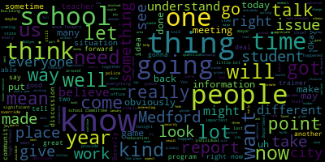

[Belson]: Nice to see everybody.
[Belson]: Thank you for giving me an opportunity to say a few things.
[Belson]: And hopefully, what I express will help you understand what's going on.
[Belson]: Obviously, I'm here to share my perspectives and my thoughts about the upcoming questions on the November ballot, especially those that affect public education.
[Belson]: So while I'm no longer the superintendent of schools, I'm in my seventh year of retirement or semi-retirement, I still stay very aware of education items, both in the community, the state, nation, and it's very enlightening to see what people are doing around the commonwealth.
[Belson]: I spent 50 years in Medford public education, 23 years as superintendent,
[Belson]: And I also served at different times as the budget director, the curriculum director, and the personnel administrator, as well as a teacher.
[Belson]: So I care deeply about what happens in our schools and our community.
[Belson]: I'm not here tonight to criticize the school administration.
[Belson]: I know how hard they work.
[Belson]: I know the challenges that they face.
[Belson]: And I know that some of the things are beyond their control.
[Belson]: I have always believed, and I still do, that schools deserve solid levels of funding and that the budget process must promote and support quality programming, stability, and predictability.
[Belson]: Budget development must be resourceful and creative.
[Belson]: It should not be a destabilizing force, exercise, and create uncertainty and conflict.
[Belson]: And I think that's what's happened in the last couple of years.
[Belson]: Yes, there will be from time to time differences among officials, educators, constituents, but at all times, they should be based on the facts, on available resources, best practices, and the needs of students and their families, as well as the community at large.
[Belson]: The current override ballot questions, initiatives, and two of them in education, and one, a debt exclusion for the fire department,
[Belson]: Call for, if you will, in the school department, a $7 million hike.
[Belson]: You had a half a million dollars for the DPW at 7.5.
[Belson]: This is a property tax levy.
[Belson]: This request is based upon the argument that the school system has been perpetually in a structural deficit, and it's not true.
[Belson]: Pertinent questions are these is it true that it's we're in a deficit.
[Belson]: How does Medford compare with other communities around us?
[Belson]: Are there good alternatives?
[Belson]: available to meet our needs Is this a one-time request or will there be another one a larger request in the near future?
[Belson]: And I think you know the answer to that
[Belson]: What is the real impact on the Medford taxpayer?
[Belson]: And does the voting public truly understand the pros and cons?
[Belson]: And has there been sufficient information and time for the public to make an informed decision?
[Belson]: So let's take a look and let's consider the following.
[Belson]: The last two years relied heavily on the use of federal ARPA and ESSER funds.
[Belson]: They were put out there because of the COVID crisis.
[Belson]: It was well known that when these funds were used up, there would be a need for the city to sustain staff and programs with local and state revenues.
[Belson]: Otherwise, there would be undesirable cuts to program and personnel.
[Belson]: So was this necessary?
[Belson]: When the budget process took place in the last year, everybody knew that those funds had to be replaced.
[Belson]: And those funds enabled the city to build up a free cash reserve that is three times what has ever been in place.
[Belson]: Almost at this point in time, $35 million.
[Belson]: And if that was the case, was it necessary?
[Belson]: And did the mayor really fail to provide full funding consistent with the school committee's request?
[Belson]: when there's a significant amount of free cash available to the city, much higher than the amount available in previous years.
[Belson]: The school administration by law is required to ask, and the school committee as well, for an amount sufficient to support the schools under Proposition 2 1⁄2.
[Belson]: It's their legal request to do that.
[Belson]: The mayor or the city manager in the past, when 2 1⁄2 passed, had the bottom line, and the city council
[Belson]: can only approve or cut what the mayor provides.
[Belson]: So it's not simple.
[Belson]: The amount of money reported to DOR of free cash was $25 million in 2004.
[Belson]: And as I indicated, they added another $9 million or thereabouts in the current fiscal year.
[Belson]: Why, given the often repeated
[Belson]: mantra of the mayor, transparency.
[Belson]: Interesting word.
[Belson]: And the city's financial director, that they failed to provide a clean and complete report on the city's financial position to the city council and the school committee.
[Belson]: I think the answer's simple.
[Belson]: The answer is that they wanted to leverage a crisis to create
[Belson]: a need for an override.
[Belson]: Because you're in a situation where you don't have it, you're threatening cuts to important services, and if you don't give me the money, we're gonna have to do drastic measures.
[Belson]: This is not Proposition 2 1⁄2.
[Belson]: In 1981, 1982, I was in the school system.
[Belson]: I was working with the superintendent's office.
[Belson]: And the budget of the city of Medford for the schools was $19.4 million.
[Belson]: That year, we had to cut $3.2 million.
[Belson]: That's a cut.
[Belson]: 150 people got laid off.
[Belson]: That was difficult, very difficult.
[Belson]: We are not in that situation right now.
[Belson]: We are not in that situation.
[Belson]: When the 2024 DOR, Department of Revenue Tax Recap Report is studied, and I did that,
[Belson]: There are clear underestimates of revenue amounts when compared with 2023, specifically by almost 15%.
[Belson]: So in other words saying, if investment income was X, it was 14% less when they were projecting their revenue, almost $18 million.
[Belson]: Why create a crisis?
[Belson]: Before you ask the public for an override, should you not first use the obvious resources available?
[Belson]: You can always go back later on and say, you know, we used up our resources.
[Belson]: But when you have them, why won't you use them?
[Belson]: Let's talk about the tax rate.
[Belson]: The Medford tax rate is low.
[Belson]: The residential tax rate is low comparatively to area communities.
[Belson]: Nothing wrong with that.
[Belson]: I don't think anyone feels like it has to be number one, the highest tax rate in the Commonwealth.
[Belson]: So it's not a bad thing when affordability for housing and other needs is challenging.
[Belson]: If the overrides and debt exclusion pass, taxes will increase, I think, by at least 10%.
[Belson]: especially when you include the 2.5% statutory increase that happens virtually every year.
[Belson]: And what about the impact of re-evaluation?
[Belson]: You know what's going on right now, they're checking your houses out.
[Belson]: And by the way, if you haven't noticed, your house is worth more than it was when you bought it, in most cases.
[Belson]: And when they reassess it, they're gonna reassess it and the taxes are gonna go up.
[Belson]: And on top of that, you're probably gonna pay a little bit more for water and sewer,
[Belson]: And when you add it all together, if you have to take an equity loan, you're gonna pay a hell of a lot more interest than you might like.
[Belson]: And if you're a new person wanting to buy a home, the mortgage rates are still at 6.2%, and even if it goes down to 5%, it's a hell of a lot higher than it was when people refinanced a few years ago.
[Belson]: And what about renters?
[Belson]: Some of these people will never have a chance.
[Belson]: They just won't be able to
[Belson]: to get in and the landlords are going to pass on the rent to their tenants.
[Belson]: So, that affects people too.
[Belson]: When you think about it, there's also a deduction, tax deduction limit.
[Belson]: You used to be able to take your income tax and your house property tax and interest.
[Belson]: You can't do that anymore in the current rule.
[Belson]: So, you can't even deduct some of the stuff that you used to be able to do before.
[Belson]: Some people can get around it for various reasons,
[Belson]: Not everybody.
[Belson]: If you look at the age factor in the community, 22% of Medford residents are over the age of 60.
[Belson]: 14% are 70 or more.
[Belson]: A lot of these people are on fixed incomes.
[Belson]: They don't have another alternative to go to.
[Belson]: And they're probably supporting their children, their grandchildren, and everything else like that as well.
[Belson]: So a hit like this is really significant.
[Belson]: By the way, as the high school project moves forward, and it's in the planning stage right now, undoubtedly there will be another override request, which isn't out there right now.
[Belson]: That'll make three override requests.
[Belson]: The two that are there now, and the one that might come up, plus the debt exclusion, in the very near future.
[Belson]: Given the cost of a rebuild,
[Belson]: or renovation, this will be the biggest number that you've ever seen.
[Belson]: The SBA reimbursement rate is not known at this time.
[Belson]: It will only cover certain costs.
[Belson]: Not everything is eligible.
[Belson]: If you look at high schools that have been built or renovated in recent times, you're talking somewhere in the vicinity of $200 million to $400 million to redo the high school.
[Belson]: We've got vocational shops and other things like that that have to be preserved.
[Belson]: That's an expensive thing.
[Belson]: And if you maybe get 35, 40%, not getting the 90% that we got for the schools, the K through 12 schools that we got several years ago with Rick as the chairperson of the building committee at that time.
[Belson]: And we, by the way, sold the old schools so that we actually made money.
[Belson]: Don't tell anybody.
[Belson]: You don't get that now.
[Belson]: So you're gonna be talking about potentially 100 to $200 million of local assessment, over and above.
[Belson]: That will impact taxes on top of the early override assessments.
[Belson]: And by the way, if the override passes in November,
[Belson]: you will see the increase on your January 2025 tax bill.
[Belson]: You're not gonna wait a year to build it up, you're gonna see it in January.
[Belson]: It's only a few months away.
[Belson]: Now one of the arguments that comes around is that somehow Medford salaries and cost per pupil are not competitive.
[Belson]: Now as a educator, I think I started off with this, I want every nickel I can get for the schools.
[Belson]: I mean, I'd be less than honest if I didn't tell you that I think the schools deserve every nickel we can give them.
[Belson]: And we have plenty of needs.
[Belson]: But no one gets everything they want.
[Belson]: And no school system is able to do that.
[Belson]: And no community is able to do that.
[Belson]: But let's take a look at the Medford Public Schools financials.
[Belson]: And this is according to the latest Department of Elementary and Secondary Education statistics.
[Belson]: The state average per pupil
[Belson]: is $19,714.
[Belson]: Medford is currently spending $21,372.
[Belson]: Arlington is spending $18,615.
[Belson]: Malden is spending $17,428.
[Belson]: Melrose is spending $15,540.
[Belson]: Peabody is spending $16,996.
[Belson]: And I can go on and on.
[Belson]: Now, someone can say, well, there are, Mystic Valley, by the way, one of the charter schools that sucks away dollars from our budget, is paying, is spending $14,167.
[Belson]: Now, there are places, Somerville, 23,958, we just built a building so you can see where that's involved.
[Belson]: And by the way, if you wanna chase Cambridge, Cambridge is spending $36,712.
[Belson]: Of course, Cambridge has got a property base that's incredible.
[Belson]: And Burlington is $25,297.
[Belson]: And by the way, if we were still sending kids to Minuteman, the cost would be $34,176.
[Belson]: And if we continued to send 50 kids there like we did when we cut it off, we'd be pushing $2 million a year.
[Belson]: of money out of our pocket.
[Belson]: And that's why we rebuilt the vocational school.
[Belson]: And people argued about, why are you not sending the kids to Minuteman?
[Belson]: Because they're sucking dollars out of Medford.
[Belson]: And we had a right to rebuild our own school and run our own programs at a far less cost.
[Belson]: So then the question comes about teacher salaries.
[Belson]: Where's Charlene?
[Belson]: Charlene, the room boy.
[Belson]: All right, Charlene, don't take offense.
[Belson]: OK.
[Belson]: If you look at the average salary for the Medford teachers, average salary, and this is latest numbers, obviously it's gone up a little bit.
[Belson]: The average salary is $88,179.
[Belson]: That's the statistic.
[Belson]: If you're on the top step, 10 years, a master's plus 60, this year fiscal 25, you're gonna make $111,000.
[Belson]: In Arlington, the top salary is $83,466.
[Belson]: I mean the average salary.
[Belson]: Melrose is $76,369.
[Belson]: Beverly is $84,765.
[Belson]: Malden is $83,366.
[Belson]: Marblehead is $84,365.
[Belson]: Mystic Valley, their charter school, is at $73,823.
[Belson]: Prospect Hill at $78, another charter school.
[Belson]: And so on and so forth.
[Belson]: Our teachers deserve good pay, but they don't leave because they can make $2,000 or $3,000 more in another community.
[Belson]: They leave because they're afraid they might get their job cut.
[Belson]: They leave because they don't have good benefits.
[Belson]: And in Medford, health benefits and other benefits contractually are outstanding.
[Belson]: There are a lot of reasons why people stay in the Medford public schools or come to us, because our benefits are good,
[Belson]: very good, by the way, and our salary is competitive.
[Belson]: There is a teacher shortage in the country, so, you know, Medford's gonna be affected by that.
[Belson]: There are a lot of people not going into education right now because they're feeling that it's too challenging.
[Belson]: But people will stay with us for stability.
[Belson]: So the argument that somehow we're not competitive is not real.
[Belson]: Now, what are the alternatives besides free cash?
[Belson]: Well, first of all, Medford's new growth is in the tank.
[Belson]: We're on any building permits currently in place at City Hall right now.
[Belson]: And unless you're really big on a beer haul, that's the only thing that I know about.
[Belson]: How much are we leaving on the table?
[Belson]: How can we grow the tax base rather than increase taxes on residents?
[Belson]: We're not doing it.
[Belson]: We're not doing it.
[Belson]: Don't penalize the school system operations by building up huge reserves in free cash.
[Belson]: Don't underestimate revenues.
[Belson]: Let's strive for affordability.
[Belson]: And in the request for the override, there's these general categories, teacher salaries, this, that, and the other thing.
[Belson]: Be specific.
[Belson]: The people who are voting for this
[Belson]: are voting against it need to know where every dollar is going.
[Belson]: They don't want to just hear it's going into a tank someplace that hopefully will support the kinds of things that we consider to be important.
[Belson]: General categories don't cut it.
[Belson]: The override vote is less than two months away.
[Belson]: And residents, citizens, are already voting.
[Belson]: They're going to start voting very soon.
[Belson]: So besides the general information on the web, of the city's web,
[Belson]: What does the average citizen know about the need and the impact?
[Belson]: Probably not a lot.
[Belson]: Many of you will vote by mail at the general election, or the president and senator, and local races are at a minimum.
[Belson]: So there aren't a lot of people who might even come out, because, you know, they'll vote for the president and that's it.
[Belson]: The Secretary of State, I'm going to pull this out.
[Belson]: Most of you probably got this.
[Belson]: Secretary of State sends out this every year, every year there's an election.
[Belson]: And in it, not only are the candidates identified, but the ballot issues, there's five ballot issues statewide.
[Belson]: They're identified with pros and cons and research so that you as a voter can actually decide based on some information based on partisans born against and research whether to vote for a particular item.
[Belson]: I haven't seen anything in this city that would even comes close to that.
[Belson]: You have a lot of people who will go in there that day and they will not know the impact of what they're doing.
[Belson]: Some of them will think they're voting for $7 million for a new high school.
[Belson]: They're gonna be surprised.
[Belson]: Many will vote by mail.
[Belson]: So, is this the right way to request an override from our taxpayers?
[Belson]: Our city deserves, our citizens deserve more transparency than we're currently seeing.
[Belson]: Our citizens need more information on the city's finances.
[Belson]: The city council needs more information on the city's finances.
[Belson]: They don't have it.
[Belson]: How many times, and we go to Rick or to anyone else, George, how many times have you asked the city's finance director, is he still reconciling some previous year?
[Belson]: Well, they're working on it.
[Belson]: No one wants to tell anybody what's really there.
[Belson]: And that's a problem.
[Belson]: So people will vote without really knowing.
[Belson]: Our citizens need to know that there will be a likely third override coming to them in the future for that high school.
[Belson]: Now, whether it's a rebuild or it's a renovation, it's going to be expensive.
[Belson]: It's gonna be expensive.
[Belson]: And SBA will not give us 90 cents on the dollar like they did way back when.
[Belson]: And we will not have buildings to sell off to pick up the rest and make money.
[Belson]: Our citizens need to be assured, need to be assured that the school budget will not be shortchanged.
[Belson]: That any municipal service will not be shortchanged.
[Belson]: When legitimate resources are available without an override.
[Belson]: Let's not leverage the override.
[Belson]: Let's not create a crisis in order to get an override through.
[Belson]: If there's a need for more money down the road for operations, after the high school project becomes known and the reimbursement rate, well, okay, put it out there and people can talk about it.
[Belson]: But right now, you haven't got all the information.
[Belson]: Right now, you don't know
[Belson]: The big ticket item coming down the road.
[Belson]: You haven't got any idea.
[Belson]: At least you don't, many of you don't.
[Belson]: And it's important that you do.
[Belson]: Because too many people out there are going to be pushed out of their homes.
[Belson]: Too many people are going to not be able to afford to come to Medford.
[Belson]: And our school system will be played with.
[Belson]: You don't leverage the school system.
[Belson]: You make sure, you don't leverage the fire department, the police department, you don't leverage the, you make sure they have what they need to do the job.
[Belson]: And if you've got the resources available, then do it.
[Belson]: And if you really, really need something, then you make the case for it.
[Belson]: And in my opinion, the case hasn't been made.
[Belson]: The case hasn't been made.
[Belson]: Thank you for listening.
[Belson]: Want to begin by apologizing to everyone for any disruption that my actions may have caused.
[Belson]: There are people in the community who obviously were concerned, and so I respect that.
[Belson]: There's a certain element of people that have certain political agendas, and I understand that.
[Belson]: But we'll move forward, and in time, everything will heal.
[Belson]: Well, naturally, you know, I wouldn't like my career to end this way, but it's, you know, but I think that we've still been able to do a lot.
[Belson]: Remember, this is 50 years, 23 as superintendent.
[Belson]: A decision was made that people don't agree with.
[Belson]: but it also set off a whole series of concerns in the community and that's never was my intent.
[Belson]: Aye.
[Belson]: President Roy Bellson, superintendent of schools.
[Belson]: 2500 Mystic Valley Parkway, Medford, Massachusetts.
[Belson]: Mr. President, members of the council.
[Belson]: Historically, the chief of police and the school system have worked very closely together on all security matters.
[Belson]: In 1999, when Columbine hit, the chief and I were part of a group that formed
[Belson]: the STARS program, School Threat Assessment and Response System.
[Belson]: It was part of NMLEC, the Northeast Middlesex Law Enforcement Council.
[Belson]: And since that time, we've worked very closely together to put together all kinds of security measures for our schools.
[Belson]: And we communicate very regularly with each other.
[Belson]: When we think there's a danger, we talk and we take action.
[Belson]: Recently,
[Belson]: Back in and around December 28th or 29th, I'm not 100% sure of that date, a cleaning service that's employed by the public schools at the McGlynn Complex, middle school and elementary, found in the rear of the Veterans Memorial Auditorium, in the back row under a seat, a magazine clip that contained some ammunition in it.
[Belson]: It is unclear
[Belson]: how much ammunition was in it.
[Belson]: We know that it could have been, based on the chief's estimate, at least three to four rounds, but not necessarily a full clip.
[Belson]: We can't tell that because we don't have the magazine.
[Belson]: But from the picture that we were able to see, that's a reasonable estimate at this point in time.
[Belson]: The cleaning service turned it over to a custodian at the building.
[Belson]: The custodian
[Belson]: brought the magazine clip to the principal's office at the McGlynn Middle, and put it on a shelf.
[Belson]: That's the report that I have.
[Belson]: Mr. President, just a point of information.
[Belson]: So,
[Belson]: School went on Christmas break on the 22nd of December.
[Belson]: To the best of our knowledge, at least at this point, we're checking on a couple of other things.
[Belson]: Only one entity used the McGlynn during that weekend for a holiday service.
[Belson]: The cleaning service has informed us that they did a thorough cleaning
[Belson]: of the facility, including the auditorium, which they would typically do on Fridays, and found nothing at that time.
[Belson]: The service was over sometime on Sunday, and the holiday commenced on Monday.
[Belson]: Sometime around the 28th, the cleaning service went back into the theater, or the 29th, I'm not 100% sure.
[Belson]: and they found under the seat in the back row this magazine clip that I just described.
[Belson]: It was turned over to the custodian, in-house custodian, whose name is Daniel Tully.
[Belson]: Mr. Tully took that magazine clip, according to his report, and put it in the principal's office, Mr. Edwards' office, and he said on the shelf, along with some other things that were there,
[Belson]: Mr. Edwards has told us that he came into his office in and around the 30th of December to do some work and to do some cleaning, at which point he alleges that he cleared away some things that were unnecessary and may have, he doesn't know, may have discarded the magazine clip.
[Belson]: Well, I'm telling you what I know.
[Belson]: And if you have other stories, I'll be happy to listen to them.
[Belson]: But I'm telling you my latest.
[Belson]: I'm telling you what I know.
[Belson]: If I had a different story, I would say that also.
[Belson]: I'm telling you what I know.
[Belson]: I understand, but you have more information than I have then.
[Belson]: So Mr. Edwards told me that he cleaned his office and he may have discarded the item.
[Belson]: Now, if you know what a magazine clip looks like, it's about this long.
[Belson]: It's black.
[Belson]: Has some appearances that looks like it could be a small cell phone, small remote control, small other electronic device.
[Belson]: I don't know what other items he had there and how it could have been confused.
[Belson]: But that's the story that he provided to me.
[Belson]: Now, we did not have any evidence of a magazine clip available to us.
[Belson]: Sometime in early January, Mr. Tully came to my office during his shift and told me about what he had found.
[Belson]: I asked him routine questions about where he found it, who was there,
[Belson]: Those kinds of things.
[Belson]: And he couldn't really fill in much more except the fact that he found it and put that in Mr. Edwards' office.
[Belson]: We checked with different other people.
[Belson]: And at this point in time, I'm unable to identify where the chain of custody took place after Mr. Edwards allegedly
[Belson]: discarded the item, or did not see it.
[Belson]: Now, subsequent to that, we try to make some decision as to whether we felt this rose to the level of a reportable incident.
[Belson]: I'm told that Officer Ricciardi, who is the school resource officer, was also told at some point in early January.
[Belson]: That's what I'm told.
[Belson]: I want to be sure that I'm not 100% sure of that.
[Belson]: At the time, we felt that it was an isolated incident, that it was something that was not dangerous in the sense because it wasn't a firearm.
[Belson]: Bullets don't fire themselves, not a weapon.
[Belson]: No weapon was found.
[Belson]: we should take our time and not raise anxiety.
[Belson]: However, subsequent to that, in conversations that I've had with people in recent times, indicates to me that even though we did not feel it presented a clear danger, that other people do, and that they would have preferred that we made a full report
[Belson]: to the chief of police.
[Belson]: And as I indicated earlier, the chief and I talk all the time.
[Belson]: I have no problem telling the chief anything.
[Belson]: And we've talked about a lot of difficult situations over the years.
[Belson]: We don't hide things.
[Belson]: But a judgment was made.
[Belson]: And that judgment said, we don't see this as dangerous at this point in time.
[Belson]: So therefore, I take responsibility
[Belson]: for not reporting it to the chief.
[Belson]: But I did so, I believe, in good conscience.
[Belson]: I believe that it was something that I needed to know more about before I raised it or elevated it.
[Belson]: Over the years, I have reported any number of things the chief can verify to him that I thought were dangerous.
[Belson]: I don't believe that Mr. Edwards
[Belson]: would have any motive for not turning it in.
[Belson]: After all, he wasn't there on the weekend, didn't belong to him.
[Belson]: He has turned in many items, and Officer Ricciardi has indicated this, to him on multiple occasions.
[Belson]: So I don't believe he had any reason not to turn it in if he knew he had it.
[Belson]: At this point in time, since it has become an issue,
[Belson]: especially in light of what's taken place in other communities around the country.
[Belson]: We have authorized a full sweep today, full sweep of the McGlynn Complex, which was conducted by Medford Police, Somerville Police, Everett Police, and Arlington Police with dogs that are weapons and drug trained.
[Belson]: and we found no trace of weapons, ammunition, or drugs in the complex.
[Belson]: I'm comfortable that that building is clear.
[Belson]: We have also initiated, in order to help the public feel comfortable, a sweep of all school buildings over the next few days to ensure that there is nothing there that would be of concern.
[Belson]: We are also planning this week to put together material, media, and others to talk to the public about the nature of school security, what we have in place, without getting into sensitive items, but what we have in place, and also to address this issue.
[Belson]: I have communicated with the Teachers Association President, Charlene Douglas, and
[Belson]: It's possible that I will meet with the McGlynn faculty on Monday afternoon to answer any questions they have.
[Belson]: We believe that our schools are safe.
[Belson]: We believe that we do more than most school systems do to keep our schools safe.
[Belson]: We believe that we will continue to review and upgrade what we have if we find that there is room here to do so.
[Belson]: and we believe that we can go forward recognizing that the decision that I made with others in my employee needs to be upgraded in the future and that a lesson learned.
[Belson]: I'm happy to take any questions.
[Belson]: Yes.
[Belson]: No, the chief of police was not involved.
[Belson]: I did talk to the principal.
[Belson]: I did talk to the custodian.
[Belson]: I did talk to a couple of other people that I work with.
[Belson]: And in my opinion, at that particular point in time, Officer Ricciardi did come in at some point, came to the conclusion that it was not something that warranted a full investigation at this point.
[Belson]: I saw the picture last night.
[Belson]: And the clip is, if you look at the clip, you can see one bullet at the top, and then there are holes on the side.
[Belson]: The chief can describe this better than I can.
[Belson]: But he can tell how many rounds might be in it.
[Belson]: But the person's hand covered most of it, holding it.
[Belson]: So he couldn't tell beyond a certain point whether there were additional bullets beyond
[Belson]: the 3 to 4 that he was able to identify.
[Belson]: We have notified people on all kinds of situations in the past.
[Belson]: We've reported multiple situations over the years of all kinds.
[Belson]: Certainly, you know, one can debate whether this rose to that level
[Belson]: But given the consensus that I have- All due respect, there's no debate.
[Belson]: I'd like to respond to the notification issue.
[Belson]: If you're speaking about a couple of years ago when there was a bomb threat at the high school, the issue wasn't,
[Belson]: notification, the issue was timing of the notification, whether it was soon enough.
[Belson]: And the committee decided to make it a little bit faster.
[Belson]: We notified the public about that.
[Belson]: We just didn't do it immediately afterwards.
[Belson]: We did it a few hours later.
[Belson]: We felt that more people would be home.
[Belson]: But the committee felt differently, and we modified.
[Belson]: Now as far as this situation goes, it happened during a school vacation.
[Belson]: It happened when no students were in the building.
[Belson]: It didn't happen where there was a firearm anywhere near it.
[Belson]: And there was a plausible thought as to how it may have gotten there.
[Belson]: Now, since that time, we're all aware of what happened in Florida.
[Belson]: And I'm sure that there's a heightened feeling that somehow that is the same situation.
[Belson]: It's not.
[Belson]: However, Massachusetts has tremendous gun laws, tremendous gun laws.
[Belson]: We can't buy what that individual bought in Florida, in Massachusetts.
[Belson]: You can't do that.
[Belson]: From our standpoint, from my standpoint, I made a decision.
[Belson]: In that decision, we have back and forth, and it was determined that that was the wrong decision.
[Belson]: I accept responsibility for it, and we'll go forward from that.
[Belson]: but I made the decision in good faith.
[Belson]: Sometimes, you know, we make decisions that people don't agree on.
[Belson]: If I thought there was something live, if I thought that students were in the building, if I thought there was a weapon anywhere near the place, my decision would have been different.
[Belson]: So I stand on that for the time being.
[Belson]: I apologize to anyone who may feel that I did the wrong thing, but I certainly didn't do it with malintent or reason to
[Belson]: let's say obfuscate any of the information from the public.
[Belson]: I'll stand on that.
[Belson]: Why didn't I think it was necessary in January?
[Belson]: No, we don't think that's the case, because the cleaning service that found it cleans that area regularly and did not see it.
[Belson]: It's clear to me that it landed there very recently in proximity to the time that it was found.
[Belson]: I'm not gonna evaluate a principal in this forum.
[Belson]: Let's understand that.
[Belson]: I will take actions on personnel matters as we go forward into the spring, but I'm not gonna evaluate a person in this forum.
[Belson]: That's not
[Belson]: an appropriate way to do it.
[Belson]: Individuals are entitled to due process.
[Belson]: They're entitled to the protections of the law.
[Belson]: So the reality is that we will be reviewing personnel.
[Belson]: We will be reviewing policies and practices.
[Belson]: We will be ramping up some of our drills.
[Belson]: I've also told the principals that the week we come back, we're going to run a special drill
[Belson]: I'm a little concerned about it in some ways because I don't want to heighten in the students' minds that this is somehow an emergency.
[Belson]: But on the other hand, I think we should at least do one more drill at this point in time.
[Belson]: It might help the community understand that we're prepared.
[Belson]: But I think for the most realities of this thing, we will evaluate personnel and situations and policies.
[Belson]: The Medford School Committee is going to meet on Thursday night.
[Belson]: I'm sure that I'll hear
[Belson]: from them pretty directly about what they want.
[Belson]: And we will follow that.
[Belson]: And this judgment that I made won't happen again.
[Belson]: It's just that simple.
[Belson]: So Councilor, you've been on the school committee.
[Belson]: And you've received multiple phone calls or letters from me when situations have happened over the years.
[Belson]: And I believe Councilor Scarpelli, you have also.
[Belson]: Anyone who's on the school committee knows that it's a regular practice, and we do it.
[Belson]: There are some things that happen in a school.
[Belson]: It could be a kid fight, something else like that, or in the backyard, or an injury, or something like that, that you just can't
[Belson]: take everything that happens every day and send it out.
[Belson]: But having said that, this situation, in retrospect, was one that deserved notification.
[Belson]: And the judgment that I made was not the best judgment at this point in time.
[Belson]: I accept that.
[Belson]: The school committee wants to be notified, Mr. Falco.
[Belson]: I understand that.
[Belson]: They want to be notified.
[Belson]: on situations that are serious and I should have notified them on this one.
[Belson]: I understand.
[Belson]: And I just want to say that, you know,
[Belson]: Normally, I tell the chief virtually everything because we have very good communication and have for many, many years.
[Belson]: In this instance, I didn't do it.
[Belson]: I failed in that regard.
[Belson]: I accept that responsibility.
[Belson]: But typically, the school committee does want to know.
[Belson]: And I think it's clear to me that I should have informed them.
[Belson]: But I don't believe and I think this is the key point that needs to be made and needs to be heard throughout the community.
[Belson]: I don't believe our schools are unsafe.
[Belson]: I don't believe
[Belson]: that our children are in danger.
[Belson]: I believe that the school committee, the council, by paying money for cameras and other things like that, have provided quite a bit.
[Belson]: The police department has worked very closely with us, with resource officers, with all kinds of things.
[Belson]: We work closely with the district attorney to determine what's happening on the street on a regular basis.
[Belson]: There is a lot going on that heads off issues in our schools.
[Belson]: If I made a mistake this time, not if I made, I made a mistake this time, I accept that responsibility.
[Belson]: But I believe enough's in place.
[Belson]: And I believe that if we, we dedicate ourselves to it, we'll be fine.
[Belson]: I believe our schools are safe as any school in the Commonwealth.
[Belson]: But having said that, there are no guarantees.
[Belson]: There are no guarantees that I can give you or anyone of sound mind could give you.
[Belson]: because we live in a society that is a little violent.
[Belson]: We live in a society that does do unusual things at times, and we do have a lot of mental health out there, and there are guns on the street.
[Belson]: And that requires even more, more from the people that make decisions, make decisions about these issues and these policies.
[Belson]: But in this instance, I accept responsibility.
[Belson]: I will put that on our calendar for Thursday evening.
[Belson]: Yes.
[Belson]: So let me ask a technical question of the clerk, if I may, through the chair.
[Belson]: We've posted a meeting, Mr. Clerk.
[Belson]: We've posted it at the high school.
[Belson]: Can we make a modification if the chair agrees to make that modification under the open meeting law?
[Belson]: So I'll communicate with your office tomorrow morning, and you can tell me whether we fall within the guidelines.
[Belson]: OK?
[Belson]: Yeah.
[Belson]: Not at this point in time.
[Belson]: So a comment on that.
[Belson]: Of all the letters in ALICE, the only one we don't do is confront.
[Belson]: Because everyone alerts people if there's something going on.
[Belson]: Everyone locks down if they have to.
[Belson]: Everyone informs mutual aid or assistance when they do it.
[Belson]: And everyone tries to evacuate if they can.
[Belson]: It's the confront part that becomes of concern.
[Belson]: And the reason it's of concern
[Belson]: Think about young kids, little kids.
[Belson]: Should they be trying to confront?
[Belson]: Are all teachers, are all staff physically able to confront?
[Belson]: Will they try to confront?
[Belson]: Can we mandate that they confront?
[Belson]: There's a lot to this that needs to be thought about.
[Belson]: And what age group do you start?
[Belson]: And when do you start?
[Belson]: It's really an active shooter program.
[Belson]: It's not just a general program for bomb threats or things like that.
[Belson]: It's a program.
[Belson]: So there's a lot to it.
[Belson]: In that regard, who confronts and in what way, and who's able to confront, not everybody is going to be willing to do that.
[Belson]: So we have to think about it.
[Belson]: Chief and I have talked about starting maybe with the older kids and the higher grade levels.
[Belson]: There's some issues with it.
[Belson]: But look, I am more than willing to have the discussion and to have
[Belson]: an active give and take on this subject.
[Belson]: But we need all the players who are going to be expected to step up to tell us whether they're prepared to confront.
[Belson]: Now, the other day when the Parkland situation took place, if you remember the sequence, the individual pulled a fire alarm to get people to evacuate the setting and then was going to pick them off with his gun.
[Belson]: I've heard many times, why don't we evacuate this?
[Belson]: And I've told you in previous occasions that evacuation isn't always the best drill because the explosive or the sniper could be on the outside of the building, not just on the inside of the building.
[Belson]: It's all situation-specific.
[Belson]: And it needs to be talked about, more than willing to talk about it.
[Belson]: Let's not just put out alphabet soup, ALICE, and say that's a cure-all.
[Belson]: Happy to look at it.
[Belson]: Happy to get people to talk about it.
[Belson]: But it's got to be adopted and committed to by the people who are going to implement it, or else it's just another training program that will go nowhere.
[Belson]: Yes.
[Belson]: It's been offered to the president of the MTA.
[Belson]: OK.
[Belson]: And she hasn't confirmed it yet, but she thinks it's a good idea.
[Belson]: But she has to confirm it.
[Belson]: Well, that's a police investigation, so I leave that to the Chief to answer that one.
[Belson]: STARS was set up to look at school threats, the acronym School Threat Assessment and Response System.
[Belson]: So when a school threat is identified,
[Belson]: or we believe it is identified, and we believe it requires additional resources above and beyond what we have, we would notify the STARS commanders.
[Belson]: Chief Sacco once headed that group.
[Belson]: I'm not sure who heads it now.
[Belson]: We would notify them, and they would provide us with those resources.
[Belson]: So let's say we needed a graphologist.
[Belson]: They might have a graphologist.
[Belson]: Let's say we needed a certain type of psychiatrist.
[Belson]: They would help us with that.
[Belson]: Let's say we needed a forensic help.
[Belson]: There are certain police departments and entities in the state that have forensic, the bomb squads.
[Belson]: They would coordinate the kind of specialized assistance that we need to make the appropriate threat assessment and then make the appropriate response.
[Belson]: If we needed, unfortunately, a SWAT team, that would be the ultimate.
[Belson]: But it's a coordinated response.
[Belson]: And I want to make that point very clear.
[Belson]: There's a lot of people out there selling products about,
[Belson]: coordinating with schools and the like.
[Belson]: There's a lot of money being made in the school security business right now.
[Belson]: And part of it brings up the idea that we could have an uncoordinated response.
[Belson]: And that's the last thing we wanted.
[Belson]: The chief and I both agree that if we have a situation that requires mutual aid or specialized assistance, we want that coordinated.
[Belson]: You may not know, but I think we will have said it many times, but maybe you don't remember.
[Belson]: There are floor plans on the computers of the police cruisers.
[Belson]: There are doors that are marked that people can go to.
[Belson]: There's all kinds of pre-preparation in place for STARS to work and for our own police to respond strategically and specifically to areas which we believe require attention.
[Belson]: What we don't want is we don't want what happened in 1992.
[Belson]: Remember 1992?
[Belson]: In 1992, there was a altercation at the high school.
[Belson]: And at that time, people came from everywhere.
[Belson]: Helicopters were flying over the building.
[Belson]: People were coming in all different kinds of uniforms, not coordinating.
[Belson]: And that only created more problems than it assisted in helping.
[Belson]: So it's very important, and I thank the chief and his comrades at NMWEC for the work that they have put in to ensure that a response of that type through the STAR system is one that is coordinated, thorough, and strategic.
[Belson]: Very different.
[Belson]: Very different.
[Belson]: If it occurred when students were there,
[Belson]: would have been a full report and immediate response.
[Belson]: I'm not going to blame anybody else.
[Belson]: I knew about it.
[Belson]: I have a relationship with the chief.
[Belson]: I should have made the report.
[Belson]: The next step is to continue to fortify and to continue to assess.
[Belson]: I expect to be in front of you in and around March 6.
[Belson]: I know you're looking forward to seeing me again.
[Belson]: Attempted humor.
[Belson]: to get funding for the upgrade to all the security cameras that we've put in place.
[Belson]: We have upgraded all of them so that they're now capable to withstand some of the weather issues that previously they weren't.
[Belson]: They have better visibility.
[Belson]: They have better ability to pan.
[Belson]: And we think it's a distinct improvement over what we've been able to have in the past.
[Belson]: So I'll be in front of you for that, too.
[Belson]: I think so.
[Belson]: I think there are a lot of terrific groups that rent our schools.
[Belson]: And every group from Cub Scouts to all kinds of groups all the way up rent our schools or use our schools in a meaningful way.
[Belson]: This is an outlier situation.
[Belson]: This is not something that's happened frequently.
[Belson]: Maybe we didn't handle it.
[Belson]: Maybe I didn't handle it well.
[Belson]: But that doesn't mean we should deprive the community of the resources of the schools, which I think are very important to providing appropriate recreation and assistance.
[Belson]: Look, shut down the pool, we just did it.
[Belson]: You want to shut down the gymnasium?
[Belson]: We can't do that.
[Belson]: We can't live in fear.
[Belson]: So I appreciate the observation.
[Belson]: I can assure you that my conversations with certain individuals will be very direct and very thorough, and that decisions will be made about a lot of things in the next short period of time.
[Belson]: I don't think it was a question of coordination.
[Belson]: Not notifying.
[Belson]: Okay.
[Belson]: I'll accept that.
[Belson]: We don't brush things under the rug.
[Belson]: We don't brush things under the rug.
[Belson]: But from time to time, we make decisions.
[Belson]: That's what decision makers do.
[Belson]: We make decisions.
[Belson]: And if I've made a decision that didn't square with everyone else, then I accept responsibility for that.
[Belson]: But we don't brush things under the rug.
[Belson]: And the chief will tell you that we have talked about some very tough items.
[Belson]: And there will be some things you don't know about because they're personal and they're caught up in legal matters that you can't know and the school committee gets advised of because it's not a public matter.
[Belson]: But that's the way it is.
[Belson]: And that's what's required by law.
[Belson]: But clearly on safety matters, safety matters, we don't brush things under the rug.
[Belson]: Now as far as people using our facilities, we can cancel every basketball game, we can cancel every hockey game, let me finish, we can cancel every game where people come in who are visiting from some other place.
[Belson]: We know, we know that in society today there are some people out there that do horrible things.
[Belson]: And we can't just regulate everything that's going on all around us.
[Belson]: Now, if you don't want to rent the school properties, if you don't feel that that revenue or that communication with the public is a good one, that can be a policy discussion with the school committee guided by some input that you want to make.
[Belson]: But clearly, our schools
[Belson]: Our schools are going to be places, they've been community schools for years.
[Belson]: People have used them.
[Belson]: And people come in visiting from other communities and the like.
[Belson]: If we stopped everyone at the door, let me finish the point.
[Belson]: If we stopped everyone at the door, the event would never happen.
[Belson]: So I understand what you're saying.
[Belson]: But clearly, we don't hide anything.
[Belson]: This was a situation, it's unfortunate.
[Belson]: And as I've said before, I'm taking responsibility for it.
[Belson]: I'm not sure how much more I can say that.
[Belson]: That's my assumption.
[Belson]: Investigation is undergoing.
[Belson]: I'm not going to conclude anything until the police finish their work.
[Belson]: Right.
[Belson]: These buildings, when they're rented of that type, like for example, the Japanese language school has two security guards there.
[Belson]: They pay for them.
[Belson]: They pay for coverage by custodians who function as security.
[Belson]: So we have custodians that are now security guards.
[Belson]: Are they paying a different rate?
[Belson]: They provide us with coverage in those buildings.
[Belson]: That's what we need.
[Belson]: We have provided some security, have paid for some security of certain people in these large groups.
[Belson]: I've mentioned the Japanese as an example.
[Belson]: But, you know, not every group is paying for security, so maybe we need to look at it.
[Belson]: Okay?
[Belson]: Maybe we need to look at it.
[Belson]: So Mr. President, if I make one more comment, if I can.
[Belson]: I've heard the word retaliation.
[Belson]: There will be no retaliation.
[Belson]: There are a couple of legal matters pending.
[Belson]: And those legal matters are being represented by legal counsel of the city.
[Belson]: and to indicate that somehow something is wrong because we defend ourselves in a legal setting in this public forum is wrong.
[Belson]: Furthermore, if there was any evidence of retaliation, I would not allow it in any way, shape or form.
[Belson]: I hope you realize that.
[Belson]: And secondly, with regard to that,
[Belson]: There are situations and decisions that are made that people don't always agree with in terms of educational assignments, programs, services, and the like.
[Belson]: But they're made.
[Belson]: Some people agree and some people disagree.
[Belson]: And that's the nature of how we plan and how we go forward.
[Belson]: And just because there's some disagreement doesn't necessarily mean that people are at risk of losing their jobs.
[Belson]: People have professional status rights.
[Belson]: They have all kinds of rights under their contract, all kinds of rights under the law.
[Belson]: Nothing's going to happen that's inappropriate.
[Belson]: If we disagree with someone on an issue, that can happen.
[Belson]: But that happens in almost every forum and any place you go, in any operation, there may be some disagreements.
[Belson]: But no one is in jeopardy of losing their job in that regard because they spoke up or said something.
[Belson]: In fact, I appreciate it when people speak up.
[Belson]: I like it when people speak to my face directly
[Belson]: and call me on the phone when they've got something to say, rather than go to everybody else.
[Belson]: Not everybody does that.
[Belson]: Thank you.
[Belson]: Well, there are people, Mr. President, there are people, Mr. President, who want to go and find out from the person responsible.
[Belson]: And there are people that go around.
[Belson]: I don't have a problem with that in this particular point.
[Belson]: but it does speak to the issue.
[Belson]: And as far as trust goes, it cuts two ways.
[Belson]: This committee, the whole meeting, is already been posted.
[Belson]: Posted, all right?
[Belson]: Location, time, and 48-hour notice.
[Belson]: So you just can't change it.
[Belson]: It's a little easier to do, but this is our department.
[Belson]: I don't know if that.
[Belson]: Mr. President, members of the council, I want to answer a couple questions that were raised during the discussion.
[Belson]: I think it's important that this be public information.
[Belson]: As I indicated earlier, I made the decision, whether it was right or wrong, I made that decision.
[Belson]: I did not inform the school committee or the mayor until Friday.
[Belson]: So I want to make sure everyone understands that.
[Belson]: And the police chief and I talked Friday morning, directly.
[Belson]: So I want to make sure everyone understands that sequence at this particular point in time.
[Belson]: Thank you.
[Belson]: Regular business.
[Belson]: Okay, so I have had substantial contact with the Beverly Public Schools.
[Belson]: They strongly dispute the account provided to us by Ms.
[Belson]: Simonides.
[Belson]: I've gone back and forth with Stephen Hershey, who is the superintendent there.
[Belson]: He claims, and he gave me the name of the trainer, the certified trainer who was on the field at that time.
[Belson]: He said that no trainer from Beverly did anything with the individual.
[Belson]: As a result, he feels that it may have been somebody else who just simply helped out on the sidelines.
[Belson]: So I have a lot more to do.
[Belson]: I did contact the MIAA briefly and told them that we're in the process of continuing to investigate what actually took place.
[Belson]: But there is a distinct
[Belson]: difference of opinion between what Beverly feels happened and what was reported to us.
[Belson]: So there's a little bit going on right now and I'll have more reports soon as I get a better chance to talk to all the parties.
[Belson]: The feeling from Beverly was that somebody assisted the student but not necessarily the trainer and that
[Belson]: The play was allowed to go forward without any reason to stop the play.
[Belson]: So there's back and forth, but Beverly strongly refutes the idea that their trainer assisted our student and also that the trainer was not licensed.
[Belson]: And they gave me the name and showed me the licensure.
[Belson]: Not yet.
[Belson]: This is still going back.
[Belson]: In fact, the latest communication was as late as today.
[Belson]: I'm Stephen Hershey.
[Belson]: So I've got a lot more work to do.
[Belson]: I mean, obviously, there's a real difference of opinion in what took place.
[Belson]: I actually have it on my phone.
[Belson]: I can give it to you afterwards.
[Belson]: According to the Beverly Public Schools, since the referee didn't stop the play, obviously he didn't consider it serious enough and that for some reason, you know,
[Belson]: that the assistance was done on the sidelines.
[Belson]: They suspect that somebody who maybe had a nursing background or something else like that may have helped on the sidelines.
[Belson]: The question is, why did the youngster go back in the game, too, if he had a kick in the head?
[Belson]: There are a couple of questions that still have to be answered.
[Belson]: Yeah, well, according to them, they didn't believe the referee needed to stop the game.
[Belson]: And secondly, you know, and without casting any aspersions on anyone, as you know, Mississimini's was not at the game.
[Belson]: And so as a result, we have a situation where people who were at the game have very different reports as to what took place there.
[Belson]: Yes, but certainly blood is blood and if well, that's that's uh, you know an assumption that was made as to when the bleeding took place and who did what and where and I need more information.
[Belson]: I mean, obviously we have a back and forth going on and I asked uh, Stephen Hershey who's the again superintendent of Beverly um, because mississippianities was contacting the Beverly school committee and others up in Beverly and uh,
[Belson]: They are siding with the Beverly public schools right now.
[Belson]: So I you know, I need a lot more Feeling as to what's really took place point of information man The superintendent has the game officials committee been contacted to find out who the referee was and I asked I asked for that information I haven't got it back yet.
[Belson]: I didn't speak to the coach, but Mr. Maloney did.
[Belson]: And so I'm going to get a follow up on that.
[Belson]: But again, today's information, which I just got today, is a direct refutation of the story we got.
[Belson]: And so I really need to ask a lot of questions.
[Belson]: I just don't know when it happened, how it happened, and the like.
[Belson]: I have two very different reports.
[Belson]: I don't know.
[Belson]: I don't do a film in the J.V.
[Belson]: game and they may have filmed the varsity game but I don't think from the J.V.
[Belson]: game.
[Belson]: Let me let me if I can mirror let me let me read you the latest communication from Stephen Hershey Because I'm putting on my cell phone and they'll give you an idea of you know, the strength of his comment It wasn't like I don't think anything happened.
[Belson]: It's very very, you know direct So let me read it to you.
[Belson]: So I don't want to draw any conclusions until I have more investigation, but let me read you what Stephen Hershey wrote me today, and then attach some additional information which I'm exploring with others.
[Belson]: Good afternoon.
[Belson]: I'm sending you copies of what I have in addition.
[Belson]: Your athletic director sent a letter to us.
[Belson]: I spoke with several Beverly parents I know usually attend the games.
[Belson]: While some of them remember the play, they do not report it as a significant injury.
[Belson]: They note that there was no stoppage of play, nor the issuance of a card.
[Belson]: Our trainer's name is Charla Berenas, and she has been with us for a long time without complaint.
[Belson]: Beverly has taken this seriously from the start, but I have been unable to verify what has been reported.
[Belson]: Our coaches and trainer are expected to deal with potential concussions with great caution.
[Belson]: We perform ongoing training to ensure we are attending to the safety of all athletes under our own
[Belson]: our players from other teams.
[Belson]: I would like to find out what happened.
[Belson]: Please forward me any information you have.
[Belson]: So, we have an ongoing investigation.
[Belson]: You know, I can't draw a conclusion, you know, without more discussion with people.
[Belson]: This came through today, and we've got a little bit more to follow up, and I just don't want to draw conclusions until I'm comfortable that everyone has a chance to review the information back and forth.
[Belson]: Yes.
[Belson]: Okay, second.
[Belson]: And you can add me to the chair.
[Belson]: Yeah, I wasn't.
[Belson]: Yeah, I was present.
[Belson]: Okay.
[Belson]: It will be in the conference room.
[Belson]: You've been handed a report tonight that was prepared, that was sent to us.
[Belson]: Pretty much.
[Belson]: There's probably another factor too in terms of busing.
[Belson]: You know, the more busing that takes place, the less likely they are to arrive, you know, and take it before the actual school starts.
[Belson]: So let me just make one clarification.
[Belson]: This is the breakfast program.
[Belson]: This is not the total numbers of students on free and reduced.
[Belson]: You know, not everybody comes in early enough for breakfast, especially at the high school and places like that.
[Belson]: So we'll give you a report with the total numbers because they're much higher when you look at the school lunch program as opposed to the
[Belson]: breakfast program, which is a more, let's say, niche program that not everybody participates in.
[Belson]: It's one that, you know, we'd like to increase, but then we've talked to Andrea Silbert over at EOS, you know, many times.
[Belson]: But I think that the breakfast program doesn't give you a full, accurate picture.
[Belson]: If just at the high school alone, the number of youngsters who are in free and reduced who don't pay a user fee for athletics would tell you that it's much higher than this.
[Belson]: Okay?
[Belson]: So we'll give you that report.
[Belson]: I'm sorry.
[Belson]: Second.
[Belson]: So we're using the tobacco policy because vaping is sort of a derivative and you know but as we move forward we'll obviously specify a little bit more completely.
[Belson]: Move approval.
[Belson]: Well, we can just make one quick comment, as we've done this at this place every year for a long time now, and the reason we need to approve it so early is that if we have snow days,
[Belson]: you know, we've locked in the date.
[Belson]: So we don't have to have, you know, so many days.
[Belson]: But if there are no snow days, we don't have to worry about it.
[Belson]: And the other thing, the other thing that I just want to let you know is that Mr. William Cummings of the Cummings Foundation will speak at graduation in addition to the normal speakers.
[Belson]: I think that it's really important to understand that cameras are fragile.
[Belson]: and that every year we're going to have to allocate money for this because lightning strikes, all kinds of things take place that are beyond our control and we can go all year long and then find that we need.
[Belson]: cameras that have to be replaced going into the school year.
[Belson]: So I think the key thing, you know, apropos to your question is, is that are we covering the areas that people need to be, have covered, that people can see?
[Belson]: The answer is yes.
[Belson]: And we'll try to, you know, continually prioritize as we go forward.
[Belson]: If a camera goes down, we certainly want to ensure that a key area is covered.
[Belson]: So rather than one that might be a duplicate of an existing area.
[Belson]: For the most part, in the middle of December, we believe everything will be fixed.
[Belson]: Let me answer that before we go too far down the road.
[Belson]: Mr. O'Keefe did provide a substantial number, 30 additional cameras this year.
[Belson]: Some of them are not compatible with what we need.
[Belson]: Some of them can be used for limited purposes, but given what we're doing right now and given the upgrade in technology,
[Belson]: Um, what's coming out of that institution that Bill gets it from, uh, is not necessarily compatible with what we've got.
[Belson]: There's a few that can be, so we've got to screen them out, but we really can't be overly dependent on that.
[Belson]: We appreciate what Bill's done, but on the other hand, we've got to be careful that, uh, they're mostly inside cameras, and the things that deal with outside cameras are very different, and we're also dealing with a different way of, uh, of a transmission, uh, than we previously did.
[Belson]: We can use them periodically, but it's not a one-to-one kind of application, but we do appreciate it.
[Belson]: I think we did once, but I'll send it again.
[Belson]: have expectations of coming forward with a proposal as the year progresses to enhance our human resources capacity.
[Belson]: I mean, it's become a major, major area, and you cannot continue to just simply treat it as a, you know, byproduct of everything else going on.
[Belson]: So that will come forward as a major proposal, and we'll have that discussion.
[Belson]: We will.
[Belson]: I doubt you're going to forget.
[Belson]: So, as you probably know, the state legislature has approved an option for school districts to incorporate bilingual education into the existing SEI format.
[Belson]: Now, 15 years ago, Ron Unz, who came from California, pushed an initiative petition, which previously had some success in Arizona and California, and Massachusetts decided that it would adopt it as well.
[Belson]: It was given great support from John Silber at the time, and also Mitt Romney, who was a gubernatorial candidate, and it carried its way.
[Belson]: Since the time it's been implemented, there's been mixed results.
[Belson]: Sometimes it works, sometimes it doesn't, but it comes with that whole idea that, you know, everyone should speak English, and we believe they should, but how to learn to speak English, especially to learn subjects that require deep cognitive knowledge, cognitive language, is not so easily done.
[Belson]: And there are reasons for blending and doing things a little bit differently.
[Belson]: We obviously are looking at that.
[Belson]: We're going to be waiting for the Department of Elementary and Secondary Education to give us the latest guidelines as they see them.
[Belson]: And we haven't seen them yet.
[Belson]: We probably won't see them until either late spring or perhaps even into the summer.
[Belson]: So I doubt there's going to be much done in the next fiscal year.
[Belson]: We are going to look at the blend of programs and that Paul is going to come up in a minute and talk about that and how it comes together so that we can take advantage of the law where it's appropriate while at the same time not lose track of situations which are best served by the current SEI.
[Belson]: Also, as you probably know, our teachers have
[Belson]: been working to get SCI endorsements, which are required now for teachers who work with students who have EL requirements, and the vast majority of faculty members do, especially in the core academic areas.
[Belson]: However, there's still some gaps, and there's still a need to continue pushing that as people
[Belson]: receive students who have this English language need to make sure that the teachers are fully prepared for them.
[Belson]: We also have the issue of dealing with the distribution of students with EL and we're going to look at that.
[Belson]: We did some distribution this year.
[Belson]: We'll have some comment about that.
[Belson]: It's not an easy subject.
[Belson]: Because as you move people around, you solve one problem, you create another.
[Belson]: So we're going to provide some options for you in the beginning of the year, sometime in January, so you can look at what options are available to you and what it means financially and what it means programmatically.
[Belson]: But tonight, we want to give you an idea about the law, the pros, the cons of it, and some of the other things that Paul has put together.
[Belson]: So with permission, Paul, if you'd come on up and give us a
[Belson]: A discussion on this topic.
[Belson]: It's going to be tied into our discussion about options.
[Belson]: Okay, sounds great.
[Belson]: It's a larger picture and, you know, Paul and I have had some serious discussions about the pros and cons of any kind of movement of people.
[Belson]: What it means for staff, what it means for transportation, what it means for siblings, what it means for, you know, language groupings.
[Belson]: This is a very complex issue, and it requires a great deal of trade-off.
[Belson]: You have to decide what's the most important thing to us, what are the most important issues to us, and how we're going to solve them, because there's no one perfect solution for any of this.
[Belson]: Thank you.
[Belson]: At one time it should be noted that the courses were offered free, but that gate is now closed.
[Belson]: Okay.
[Belson]: So now we have to, if we have openings for new people, if they're not coming out of colleges with the SEL endorsement, we have to actually offer it if they have students.
[Belson]: Thank you.
[Belson]: So we're going to ask our deputy superintendent to Bernadette Bernadette to director of curriculum to tell us how we responded to some of the issues that were raised recently.
[Belson]: That may be tough because sound payments are generally made well in advance.
[Belson]: I don't think it's going to hold anything up.
[Belson]: You know the basic premise of the report.
[Belson]: Right, okay.
[Belson]: I think if we allow us to just move forward, you know, and the formalization will take place when we get back.
[Belson]: Well, I guess, you know, we're going to have some field trips that are going to show up, you know, in the next little while.
[Belson]: And if it takes a little bit longer to get everything clear, we'll be operating under some old rules.
[Belson]: It might be useful to just simply say that in the main, this is an acceptable piece, understanding the amendment.
[Belson]: I mean, and that we provide the forms of the earliest possible time in January.
[Belson]: Forms, yes.
[Belson]: And we'll provide them to you, but at least you'll have something that's, you know.
[Belson]: I think you need to be careful not to overregulate, because what happens is that circumstances change, situations change.
[Belson]: What you're really saying to us, be responsible, be reasonable, keep us informed, make things, you know, don't let people go run amok and go too far down the road before, you know, you know about it.
[Belson]: Because that's really what we're basically saying to people.
[Belson]: And I think, you know, we've got professionals on staff, they've got to understand that that means give us the information in a timely way.
[Belson]: Mr. Superintendent, do I dare remind you that just last week we were approving a field trip.
[Belson]: We also had a full month where we didn't hold a meeting.
[Belson]: And that's really, you know, that was really a circumstantial thing, but that's a typical.
[Belson]: Okay, so I've had substantial contact with the Beverly Public Schools.
[Belson]: They strongly dispute the account provided to us by Ms.
[Belson]: Simonides.
[Belson]: I've gone back and forth with Stephen Hershey, who is the superintendent there.
[Belson]: He claims, and he gave me the name of the trainer, the certified trainer, who was on the field at that time.
[Belson]: He said that no trainer from Beverly did anything with the individual.
[Belson]: As a result, he feels that it may have been somebody else who just simply helped out on the sidelines.
[Belson]: So I have a lot more to do.
[Belson]: I did contact the MIAA briefly and told them that we're in the process of continuing to investigate what actually took place.
[Belson]: But there is a distinct
[Belson]: difference of opinion between what Beverly feels happened and what was reported to us.
[Belson]: So there's a little bit going on right now and I'll have more reports soon as I get a better chance to talk to all the parties.
[Belson]: The feeling from Beverly was that somebody assisted the student but not necessarily the trainer and that
[Belson]: the play was allowed to go forward without any reason to stop the play.
[Belson]: So there's back and forth, but Beverly strongly refutes the idea that their trainer assisted our student and also that the trainer was not licensed.
[Belson]: They gave me the name and showed me the licensure.
[Belson]: Not yet.
[Belson]: This is still going back.
[Belson]: In fact, the latest communication was as late as today from Stephen Hershey.
[Belson]: So I've got a lot more work to do.
[Belson]: I mean, obviously, there's a real difference of opinion in what took place.
[Belson]: I actually have it on my phone, and I can give it to you afterwards.
[Belson]: According to Beverly, uh, the Beverly Public Schools, since the referee didn't stop the play, obviously he didn't consider it serious enough and that for some reason, um, you know,
[Belson]: that the assistance was done on the sidelines.
[Belson]: They suspect that somebody who maybe had a nursing background or something else like that may have helped on the sidelines.
[Belson]: The question is, why did the youngster go back in the game, too, if he had a kick in the head?
[Belson]: There are a couple of questions that still have to be answered.
[Belson]: Yeah, well, according to them, they didn't believe the referee needed to stop the game.
[Belson]: And secondly, and without casting any aspersions on anyone, as you know, Mississimini's was not at the game.
[Belson]: And so as a result, we have a situation where people who were at the game have very different reports as to what took place there.
[Belson]: Yes, but certainly blood is blood and if... Well, that's an assumption that was made as to when the bleeding took place and who did what and where and I need more information.
[Belson]: I mean, obviously we have a back and forth going on and I asked Stephen Hershey, who's the, again, superintendent of Beverly,
[Belson]: because Mississippi was contacting the Beverly School Committee and others up in Beverly and they are siding with the Beverly Public Schools right now.
[Belson]: So I need a lot more feeling as to what really took place.
[Belson]: Point of information, Mayor?
[Belson]: I asked for that information, I haven't got it back yet.
[Belson]: I didn't speak to the coach, but Mr. Maloney did.
[Belson]: And so I'm going to get a follow-up on that.
[Belson]: But again, today's information, which I just got today, is a direct refutation of the story we got.
[Belson]: And so I really need to ask a lot of questions.
[Belson]: Yeah.
[Belson]: I just don't know when it happened, how it happened, and the like.
[Belson]: I have two very different reports.
[Belson]: I doubt they were filming the JV game.
[Belson]: They may have filmed the varsity game, but I doubt they filmed the JV game.
[Belson]: Let me, if I can, Mayor, let me read you the latest communication from Stephen Hershey, because I'm going to put it on my cell phone, and it'll give you an idea of, you know, the strength of his comment.
[Belson]: It wasn't like, I don't think anything happened.
[Belson]: It was very, very, you know, direct.
[Belson]: So let me read it to you.
[Belson]: So I don't want to draw any conclusions until I have more investigation, but let me read you what Stephen Hershey wrote me today, and then attach some additional information which I'm exploring with others.
[Belson]: Good afternoon.
[Belson]: I'm sending you copies of what I have in addition.
[Belson]: Your athletic director sent a letter to us.
[Belson]: I spoke with several Beverly parents I know usually attend the games.
[Belson]: While some of them remember the play, they do not report it as a significant injury.
[Belson]: They note that there was no stoppage of play, nor the issuance of a card.
[Belson]: Our trainer's name is Charla Berenas, and she has been with us for a long time without complaint.
[Belson]: Beverly has taken this seriously from the start, but I have been unable to verify what has been reported.
[Belson]: Our coaches and trainer are expected to deal with potential concussions with great caution.
[Belson]: We perform ongoing training to ensure we are attending to the safety of all athletes under our own
[Belson]: our players from other teams.
[Belson]: I would like to find out what happened.
[Belson]: Please forward me any information you have.
[Belson]: So we have an ongoing investigation.
[Belson]: You know, I can't draw a conclusion, you know, without more discussion with people.
[Belson]: This came through today, and we've got a little bit more to follow up, and I just don't want to draw conclusions until I'm comfortable that everyone has a chance to review the information back and forth.
[Belson]: Yes.
[Belson]: OK.
[Belson]: Second.
[Belson]: And you can add me to the meeting.
[Belson]: Yeah, I was present.
[Belson]: OK.
[Belson]: Yes.
[Belson]: It will be in the conference room.
[Belson]: You've been handed a report tonight that was sent to us.
[Belson]: Pretty much, yeah.
[Belson]: Sure.
[Belson]: There's probably another factor, too, in terms of busing.
[Belson]: The more busing that takes place, the less likely they are to arrive and take it before the actual school starts.
[Belson]: So let me just make one clarification.
[Belson]: This is the breakfast program.
[Belson]: This is not the total numbers of students on free and reduced.
[Belson]: Okay.
[Belson]: You know, not everybody comes in early enough for breakfast, especially at the high school and places like that.
[Belson]: So we'll give you a report with the total numbers because they're much higher when you look at the school lunch program as opposed to the
[Belson]: breakfast program, which is a more, let's say, niche program that not everybody participates in.
[Belson]: It's one that, you know, we'd like to increase, but, and we've talked to Andrea Silbert over at EOS, you know, many times.
[Belson]: But I think that the breakfast program doesn't give you a full, accurate picture.
[Belson]: If just at the high school alone, the number of youngsters who are in free and reduced, who don't pay a user fee for athletics, would tell you that it's much higher than this.
[Belson]: Okay?
[Belson]: So, we'll give you that report.
[Belson]: Second.
[Belson]: So we're using the tobacco policy because vaping is sort of a derivative.
[Belson]: But as we move forward, we'll obviously specify a little bit more completely.
[Belson]: Move approval.
[Belson]: Well, we can just make one quick comment, as we've done this at this place every year for a long time now, and the reason we need to approve it so early is that if we have snow days,
[Belson]: you know, we've locked in the date.
[Belson]: So we don't have to have, you know, so many days.
[Belson]: But if there are no snow days, we don't have to worry about it.
[Belson]: And the other thing, the other thing that I just will let you know is that Mr. William Cummings of the Cummings Foundation will speak at graduation in addition to the normal speakers.
[Belson]: I think that it's really important to understand that cameras are fragile.
[Belson]: and that every year we're going to have to allocate money for this because lightning strikes, all kinds of things take place that are beyond our control and we can go all year long and then find that we need
[Belson]: cameras have to be replaced going into the school year.
[Belson]: So I think the key thing, you know, apropos to your question is, is that are we covering the areas that people need to be, have covered, that people can see?
[Belson]: The answer is yes.
[Belson]: And we'll try to, you know, continually prioritize as we go forward.
[Belson]: If a camera goes down, we certainly want to ensure that a key area is covered.
[Belson]: So rather than one that might be a duplicate of an existing area.
[Belson]: For the most part, in the middle of December, we believe everything will be fixed.
[Belson]: So let me answer that before we go too far down the road.
[Belson]: Mr. O'Keefe did provide a substantial number, 30 additional cameras this year.
[Belson]: Some of them are not compatible with what we need.
[Belson]: Some of them can be used for limited purposes.
[Belson]: But given what we're doing right now and given the upgrade in technology,
[Belson]: Um, what's coming out of that institution that Bill gets it from, uh, is not necessarily compatible with what we've got.
[Belson]: There's a few that can be, so we've got to screen them out, but we really can't be overly dependent on that.
[Belson]: We appreciate what Bill's done, but on the other hand, we've got to be careful that, uh, they're mostly inside cameras, and the things that deal with outside cameras are very different, and we're also dealing with a different way of, uh, of a transmission, uh, than we previously did, so.
[Belson]: We can use them periodically, but it's not a one-to-one kind of application, but we do appreciate it.
[Belson]: I think we did once, but I'll send it again.
[Belson]: We do have expectations of coming forward with a proposal as the year progresses to enhance our human resources capacity.
[Belson]: I mean, it's become a major, major area, and you cannot continue to just simply treat it as a, you know, byproduct of everything else going on.
[Belson]: So that will come forward as a major proposal, and we'll have that discussion.
[Belson]: I doubt you're going to forget.
[Belson]: Thank you, Kirsten.
[Belson]: So, as you probably know, the state legislature has approved an option for school districts to incorporate bilingual education into the existing SEI format.
[Belson]: Now, 15 years ago, Ron Unz, who came from California, pushed an initiative petition, which previously had some success in Arizona and California, and Massachusetts decided that it would adopt it as well.
[Belson]: Uh, it was given great support from John Silber at the time, and also Mitt Romney, who was a gubernatorial candidate, and it carried its way.
[Belson]: Uh, since the time it's been implemented, there's been mixed results.
[Belson]: Um, sometimes it works, sometimes it doesn't, but it comes with that whole idea that, you know, everyone should speak English, and we, we believe they should, but how to learn to speak English, especially to learn subjects that have required deep cognitive knowledge.
[Belson]: cognitive language is not so easily done.
[Belson]: And there are reasons for blending and doing things a little bit differently.
[Belson]: We obviously are looking at that.
[Belson]: We're going to be waiting for the Department of Elementary and Secondary Education to give us the latest guidelines as they see them.
[Belson]: And we haven't seen them yet.
[Belson]: We probably won't see them until either late spring or perhaps even into the summer.
[Belson]: So I doubt there's going to be much done in the next
[Belson]: uh, fiscal year.
[Belson]: However, we are going to look at the blend of programs, and that Paul is going to come up in a minute and talk about that, and how it comes together so that we can take advantage of the law where it's appropriate, while at the same time not lose track of, uh, situations which are best served by the current SEI.
[Belson]: Uh, also, as you probably know, uh, our teachers have
[Belson]: I've been working to get SEI endorsements, which are required now for teachers who work with students who have EL requirements, and the vast majority of faculty members do, especially in the core academic areas.
[Belson]: However, there's still some gaps, and there's still a need to continue pushing that as people receive students who have this English language need.
[Belson]: to make sure that the teachers are fully prepared for them.
[Belson]: We also have the issue of dealing with the distribution of students with EL, and we're going to look at that.
[Belson]: We did some distribution this year.
[Belson]: We'll have some comment about that.
[Belson]: It's not an easy subject, because as you move people around, you create, you solve one problem, you create another.
[Belson]: So we're going to provide some options for you in the, um, beginning of the year, sometime in January, so you can look at what, what options are available to you and, uh, what it means financially and what it means programmatically.
[Belson]: Uh, but tonight, uh, we want to give you an idea about the law, the pros, the cons of it, and, uh, some of the other things that, uh, Paul has put together.
[Belson]: So with permission, Paul, if you come on up and, uh, give us a, uh, a discussion on, on this topic.
[Belson]: It's going to be tied into our discussion about options.
[Belson]: Okay, sounds great.
[Belson]: It's a larger picture and, you know, Paul and I have had some serious discussions about the pros and cons of any kind of movement of people.
[Belson]: What it means for staff, what it means for transportation, what it means for siblings, what it means for, you know, language groupings.
[Belson]: This is a very complex issue, and it requires a great deal of trade-off.
[Belson]: We have to decide what's the most important thing to us, what are the most important issues to us, and how we're going to solve them, because there's no one perfect solution for any of this.
[Belson]: Thank you.
[Belson]: At one time it should be noted that the courses were offered free, but that gate is now closed.
[Belson]: Okay.
[Belson]: So now we have to, if we have openings for new people, if they're not coming out of colleges with the SEL enforcement, we have to actually offer it if they have students.
[Belson]: So we're going to ask our deputy superintendent to tell us how we responded to some of the issues that were raised recently.
[Belson]: That may be tough because sound payments are generally made well in advance.
[Belson]: I don't think it's going to hold anything up.
[Belson]: You know the basic premise of the report.
[Belson]: Right, okay.
[Belson]: I think if we allow us to just move forward, you know, and the formalization will take place when we come back.
[Belson]: Well, I guess, you know, we're going to have some field trips that are going to show up, you know, in the next little while.
[Belson]: And if it takes a little bit longer to get everything clear, we'll be operating under some old rules.
[Belson]: It might be useful to just simply say that in the main, this is an acceptable piece, understanding the amendment.
[Belson]: I mean, and that we provide the forms at the earliest possible time in January.
[Belson]: Forms, yes.
[Belson]: And we'll provide them to you, but at least you'll have something that's, you know.
[Belson]: I think you need to be careful not to overregulate, because what happens is that circumstances change, situations change.
[Belson]: What you're really saying to us, be responsible, be reasonable, keep us informed, make things, you know, don't let people go run amok and go too far down the road before, you know, you know about it.
[Belson]: Because that's really what we're basically saying to people.
[Belson]: And I think, you know, we've got professionals on staff, they've got to understand that that means give us the information in a timely way.
[Belson]: We also had a full month where we didn't hold a meeting.
[Belson]: And that's really, you know, that was really a circumstantial thing, but that's eight years ago.
[Belson]: We obviously lock in doors, put kids in places, put people in key strategic locations to watch doors and corridors and any other possible area where someone might get in.
[Belson]: And everyone follow that exactly.
[Belson]: Kirsten's not here, but I. Oh, maybe you can help me.
[Belson]: So in the teacher's contract, okay, we put in during the last negotiations, a piece that allocated $30,000 in year one and $40,000 in year two, the teachers to take individual courses and be reimbursed up to $1,000.
[Belson]: What you're seeing in that line and those line items is reimbursement for that purpose.
[Belson]: They apply for it through the deputy superintendent's office.
[Belson]: He reviews it.
[Belson]: It's first come, first serve.
[Belson]: We obviously review it for graduate credit to make sure that it's consistent with educational purposes.
[Belson]: We approve it on a first come, first serve basis.
[Belson]: When they provide the credentials and the evidence that's been completed, we pay it.
[Belson]: This is for the hockey clothing.
[Belson]: So that is for our fee to the Northeast Conference, which we have now joined.
[Belson]: The individual named is the coordinator for that conference and the check is made out to the conference Strictly for her, you know for the for the FIFA instead of the GBL we now belong to the Northeast Conference
[Belson]: If you can tell me the item, I'm not sure what you're referring to.
[Belson]: That was a refurbishment of the field every work on the turf fields and that's for rubber refer re-infer refurbishment of that field.
[Belson]: So we had a committee of the whole on the vocational and high school merger.
[Belson]: You have that in your folder.
[Belson]: If you choose to read it, usually it's read by the secretary.
[Belson]: If not, you can just simply waive the reading and just simply accept it.
[Belson]: So we'll bring them down to the next meeting, and I'm sure it can be done.
[Belson]: Why don't we get a clarification out this week?
[Belson]: When I see Dr. Perrella tomorrow morning, we'll send you a notification as to what they can do.
[Belson]: And if it can be done the way you want it, we'll do it right away.
[Belson]: And if there's some other issue that has come up, they'll explain it and we'll deal with it.
[Belson]: I would suggest that you give us another month to do that because people are still being placed and this will be a very
[Belson]: Transitory report this early in the year.
[Belson]: Mayor and members of the school committee, teachers of the McGlynn, ladies and gentlemen.
[Belson]: We respect the teachers of the McGlynn.
[Belson]: We respect the McGlynn school.
[Belson]: We have two very fine middle schools.
[Belson]: We never said that we didn't.
[Belson]: But we also said that there's a public perception out there that one school is more attractive than the other at this point in time.
[Belson]: Several years ago, it was the other way around.
[Belson]: One school drew more students than the other school.
[Belson]: And this year, there was a significant imbalance in grade six coming up based on parent perception, based on what parents were telling us about the program.
[Belson]: Now, whether they're right or they're wrong, our goal was to restore that balance, and our goal was to bring everyone into the picture and create ownership so that we would all move forward and change that imbalance.
[Belson]: That's not an indictment.
[Belson]: That's an attempt to try and say, let's do something about it.
[Belson]: Now, the action plan, our suggestions and things that we've put in place,
[Belson]: Yes, there were some moves that we made by reassignment, but that's the right of the administration through the contract with the Teachers Association.
[Belson]: We have the right to reassign people, and we did talk to union representatives, and we did try to negotiate something, but it broke down.
[Belson]: My point right now is that I welcome your interest in working with us going forward.
[Belson]: And I encourage it, because the only point we're trying to make right now is we have to own the issue.
[Belson]: Right now, public perception is one school is more attractive than the other.
[Belson]: Our goal is to change that perception, to let them know how much you are doing for their children, to work on the distribution of population, and to try and move it forward in a very positive way.
[Belson]: So I welcome your involvement.
[Belson]: That's all we ask for in our discussions with union representatives.
[Belson]: One of the key points was everyone would collaborate and work together.
[Belson]: everyone would collaborate and work together.
[Belson]: So I welcome it.
[Belson]: We'll come down.
[Belson]: We'll have a nice meeting.
[Belson]: We'll talk about what we can do, what we can't do.
[Belson]: Some of the things we're putting in place, including our deputy superintendent gave out to the committee some materials on clubs that have been expanded.
[Belson]: Certainly, every budget has its limitations.
[Belson]: You can't do everything that everyone wants in any one year.
[Belson]: But there are expansions of clubs and activities which we think are extremely significant, and we're listening to you.
[Belson]: And all we ask is that we tackle it together so that as we go forward, when people are making choices next year about where they want to go to middle school, that it will balance out.
[Belson]: That's all, and that we'll work forward to it.
[Belson]: And if there are other things that have to be done, we intend to do them with you.
[Belson]: Not to you, with you.
[Belson]: But we need everyone to accept that and work together with us as well.
[Belson]: So I look forward to it.
[Belson]: I appreciate your coming down.
[Belson]: I appreciate your courage in speaking.
[Belson]: I think it's really good.
[Belson]: It's really a good stimulus that you got up here tonight and you spoke and you said who you are and you're proud of who you are.
[Belson]: I applaud that.
[Belson]: I think that's great.
[Belson]: Let's keep it going.
[Belson]: Let's do it.
[Belson]: So I hear you.
[Belson]: Adversity brings opportunity and we should collaborate, but I can't let one thing go.
[Belson]: We did meet, you know we met, and we had discussions, and we brought people in, and we talked about it.
[Belson]: Now, it didn't end up in a positive result the way you wanted it, but we did meet.
[Belson]: Now, we did meet, and it could have had brought some changes, but we couldn't reach an agreement.
[Belson]: So, you know, I'm not blaming anybody.
[Belson]: This is not a blame game.
[Belson]: What this is is an attempt to say the best result for all of us is to collaborate, so ownership.
[Belson]: Good results happen when everyone's ownership is resolved.
[Belson]: We're here to help you.
[Belson]: We want you to win.
[Belson]: I don't win as superintendent if one school's not doing well.
[Belson]: I only win when everyone's doing well.
[Belson]: And so I want you to win.
[Belson]: The school committee wants you to win.
[Belson]: We all want to do it together.
[Belson]: And if this is a clarion call to do more, then let's do more.
[Belson]: That's all it is.
[Belson]: It's a chance to say, OK, you came out.
[Belson]: You showed a little spirit tonight, great spirit tonight.
[Belson]: You spoke extremely well.
[Belson]: Justin spoke extremely well.
[Belson]: Next step is collaborate, move forward, listen to any suggestions you have, and let's move forward in an intelligent way.
[Belson]: And next year, who knows?
[Belson]: you might be even over-enrolled.
[Belson]: I don't wanna go back and forth.
[Belson]: I know that you had conversations with the Deputy Superintendent.
[Belson]: About many of the items in it.
[Belson]: But at any point, it serves no purpose to go back and forth tonight.
[Belson]: The issue tonight is your voices are heard, you are respected, we want you to know that, and we want to work with you, and we look forward to doing that in the weeks ahead.
[Belson]: That's what you need to take home.
[Belson]: Mayor and members of the school committee is Dr. Riccadeli here?
[Belson]: Before she actually delivers this report I want to say that today I spent a couple of hours with the Economic Empowerment Task Force of the Commonwealth
[Belson]: going over various initiatives that the state is putting in place that deal with helping families to save for college, to deal with financial literacy, to deal with debt, to deal with the kinds of things that are very, very significant to people in their lives in terms of being able to afford
[Belson]: to live in the commonwealth, and we are, you know, right in the middle of it because we are strong participants with that activity, and financial literacy is extremely important to us, and we're going to continue to promote that in a very, very powerful way.
[Belson]: So this program, Credit for Life, is one of the initiatives out of the state treasurer's office, and Dr. Riccadeli has been working with a small task force to get it ready so that we can have this Credit for Life Fair
[Belson]: this January, and I can tell you that we are going to have an invite list of serious members from the state who want to be here for this particular activity, so I'm going to let Dr. Riccadeli talk about it.
[Belson]: No, just receive and place on file and we're gonna move forward.
[Belson]: Report on game change anti-violence partnership grant from New England Patriots Foundation So this is another very significant initiative that the school system is working through We have
[Belson]: Rachel Perry with us who is our supervisor of health and physical education actively involved in this.
[Belson]: It's an exciting program as we all know that you know young people like sports and they like to be associated with sports heroes despite yesterday's loss.
[Belson]: but they like to be associated with that and I think this is a really important thing.
[Belson]: It not only does two things.
[Belson]: One, it talks about how to recognize a healthy relationship, but it also deals with gender issues, which I think are really significant in our world today.
[Belson]: And we've gotta move forward on that.
[Belson]: So I'm gonna turn it over to Rachel.
[Belson]: I've given you some additional material, a trainer's guide, some selected portions of it.
[Belson]: I mean the whole thing would be like 100 pages.
[Belson]: but you can see the kind of curriculum that's in there.
[Belson]: It's got a lot of sports-related kind of terminology in it, so it's like talking trash scenario, you know, the kinds of things like that, or, you know, being offside.
[Belson]: So it's the kind of thing that appeals to young people, and we've got a whole team that's involved, but Rachel's going to explain it to you in detail.
[Belson]: So, last week was it, Roberta?
[Belson]: Yes.
[Belson]: Roberta and I met, Diane was there.
[Belson]: We went over a number of things that, you know, might have value to the schools.
[Belson]: We also talked about an ongoing process with our students in each of the schools coming up with ideas too.
[Belson]: Sometimes there are small projects and preservation of artifacts sometimes the preservation of small things that are at a school that historic from schools that are no longer there that might enhance the existing schools or projects of that of that type We got to remember too that this is not just a one-time thing this is going to go on for a while because the CPA is a continuous source of funding and
[Belson]: And as it continues, there's some things that maybe we won't get in round one, but we should be planning for in rounds two and three because it goes forward into the future.
[Belson]: And we also should be looking at if we were able to come up with a project, is there a match that we can grab from the community, whether it's a bank or some other resource that we can entice?
[Belson]: If we got this money from community preservation, would you contribute this to support this project so we can move it forward at a larger scale?
[Belson]: So I think it's a great opportunity for students and faculty to participate in the identification of projects and in doing things that are meaningful to them in each of the various schools.
[Belson]: throughout the community and also possibly to create, and this is something we've talked about before, a museum of education that would preserve all the kinds of things that go back into Medford education.
[Belson]: We were able to give Roberta a copy of Michael Coates' book, which is filled.
[Belson]: I don't know if you had a chance to look through it.
[Belson]: We're just filled with all kinds of historical things that talk about the city, some of which relate to the schools and some of which are just simply very interesting about the city.
[Belson]: You probably don't know that we had two racetracks in South Medford, things of that type, but there's a lot of things in the city that
[Belson]: that are interesting and could be preserved.
[Belson]: And it helps our young people understand how a city evolves, how transportation evolved, for example.
[Belson]: You see the bridge being built right near Medford Square right now?
[Belson]: That first bridge was built under the auspices of Matthew Craddock in 1634.
[Belson]: Okay, and and it was rebuilt one more time and it's all being rebuilt for the third time It's only been built three times So I mean it's kind of interesting to go back and see the Matthew Craddock never ever came to Medford But the bridge is named after Matthew Craddock So there's a lot of very interesting things that we can do and on the last comment I'll make is if you stand outside the mayor's office is a very interesting plaque there it talks about Medford history the home of rum and crackers and I like the term crackers.
[Belson]: It sort of reminds me of certain things
[Belson]: I will leave it to your imaginations.
[Belson]: If you know the Medford cracker was particular to Medford but had a split down the middle and the reason it's called the cracker is when you broke it it had a cracking sound so we're the home of crackers and sometimes it shows up at meetings.
[Belson]: So this report just gives you a quick synopsis of 54 vendors showed up at the mayor's and the schools and the athletic department and the city board of health's annual fair.
[Belson]: It's a second time.
[Belson]: Last year was held in the lobby.
[Belson]: This year was held in the gymnasium.
[Belson]: About 200 people attended.
[Belson]: It was tremendous resources there for people to take advantage of, and it's a great opportunity.
[Belson]: One of the things you'll see in this agenda tonight is you'll see a lot of things that deal with health and wellness and just taking care of yourself and paying attention to your needs outside of academic proficiency, and I think that's really important.
[Belson]: Sometimes when people try to talk about our schools, they talk about only in terms of academic proficiency.
[Belson]: One of the hallmarks of our schools is that we pay a lot of attention to a lot of other aspects of human development.
[Belson]: And this is one aspect of it.
[Belson]: I'm glad to host it.
[Belson]: And I think that the mayor did a great job putting it together with various members of the city and the schools.
[Belson]: And it was a great opportunity.
[Belson]: And Blades, the Bruins bear, was there.
[Belson]: And Pat, the Patriot, was there.
[Belson]: And I got a picture with both of them.
[Belson]: And that's going up on the wall tomorrow morning.
[Belson]: I think it's a great thing.
[Belson]: It's good that we have so many different vendors in our city that care about health and care about the well-being of our young people.
[Belson]: Any piece of software requires constant training and updating of our personnel.
[Belson]: It's complex, it's involved, but we're getting a lot of data into it to help us understand where our students are, where our teachers are, what the courses they're taking, and we have to report to the state and it has to cross-validate.
[Belson]: There's about five or six reports we do and each one has to be correct in order for them to cross validate across the various reports and this also plays into the student reporting to homes and homes reporting back to faculty members and the like so it just gives you an idea that
[Belson]: This is things we're doing with school brains and it's a work in progress.
[Belson]: People can say that why isn't it perfect?
[Belson]: Well, it takes time.
[Belson]: This is a lot of work for people to understand how you input data, how you cross-validate data, how you use data more effectively.
[Belson]: And I think I just wanted to give you an idea.
[Belson]: I know these things are hard to read, but it gives you an idea just how much our secretaries and our staff have to learn about how to use a complex piece of software so that we can get to that point in time where we can use data very, very effectively and be totally data informed about what's happening in our schools, what's happening in the community, and how it relates to our progress.
[Belson]: So I just wanted to give you an idea of what was involved.
[Belson]: And I know that, you know,
[Belson]: You won't read every word of this in between, but you get an idea of what people have to go through in order to be effective.
[Belson]: Sure, I can do that.
[Belson]: The data is one aspect of it.
[Belson]: human resources is a major field today and we have got to as a entity develop a human resources team because there's so many aspects to every aspect of an individual from licensure to professional preparation to ongoing preparation to
[Belson]: other things they have to do, you know, FMLA, all the kinds of things that affect human development.
[Belson]: We have over a thousand people that work for the school system.
[Belson]: And, you know, different aspects of what they do, are they properly trained for what they do, are they keeping up their licensure, all this stuff has to be tracked.
[Belson]: And, you know, we've got to get to that point.
[Belson]: At one time, none of this stuff had to be tracked.
[Belson]: It just simply is a person's got a teaching license, great.
[Belson]: Now we need all the kind of data.
[Belson]: We need to look at things.
[Belson]: We need to follow up things so that the people who are running the educational side of the operation concentrate on what they're doing.
[Belson]: They're not chasing down the human resource pieces.
[Belson]: So I think it may be a shift of some people as opposed to more people.
[Belson]: I just think it may be just trying to develop a pattern that we have a human resource field, a field that ties into data, a field that ties into education, a field that ties into operations.
[Belson]: And I think that will go a long way to bringing us completely into the modern age.
[Belson]: It's just part of life today.
[Belson]: Most operations have human resource operations today.
[Belson]: And we're doing it with our existing people, and piece here, piece there.
[Belson]: But I think it's getting to the point where it's advantageous to look at it in a more, let's say, cohesive way.
[Belson]: So Tony is here and you know I want to talk a little bit about it to begin with.
[Belson]: I gave you a handout tonight.
[Belson]: It's in the globe about concussions and things like this and you know we have a trainer, we have a doctor, although the doctor is leaving we're gonna have a replacement doctor.
[Belson]: You know we'll do this together and there's just a lot of factors about you see in the news today about
[Belson]: the trauma caused by brain injuries.
[Belson]: The Aaron Hernandez case brought a lot to the forefront as well.
[Belson]: BU has a major department on this topic as well, and it's just important that we understand what our experience is.
[Belson]: Now, sports, they played with passion, they played with great force.
[Belson]: There's going to be injuries.
[Belson]: Every year there are injuries in all the sports, and they range from broken bones to
[Belson]: cuts into other kinds of bruises and strains and ankles and things like knees, ACLs and the like.
[Belson]: But concussion is something that, you know, has long-term impact, real long-term impact.
[Belson]: You can get a repaired knee and things like that.
[Belson]: It may not be the best thing to get, but you can get one.
[Belson]: But if you have brain injury,
[Belson]: It may not be something that you can recover from.
[Belson]: And these are things that we have to pay attention to.
[Belson]: One of the interesting facts that I learned, and I think it's important to understand this, it often isn't just one hit.
[Belson]: Most of the injuries come from the cumulative effect of multiple hits over time.
[Belson]: And it's really that's what takes place.
[Belson]: And then that one hit maybe throws it over the top.
[Belson]: But it's really generally a buildup, an accumulation of things.
[Belson]: Another thing that I learned a little bit is that females have been more likely to get concussions than males.
[Belson]: And you would think, why is that?
[Belson]: Because you think some of the male sports are more violent, seemingly.
[Belson]: But part of it is because of the neck structure of a female, the shoulders, things like that, or maybe the leg structures.
[Belson]: they're not quite as pronounced and strong in some instances.
[Belson]: Not always, but I mean there are some instances that there are issues like that that anatomically might lead to that kind of injury.
[Belson]: So there's a lot here.
[Belson]: Right, and you know in a game like soccer, you might have, you're hitting the ball,
[Belson]: You know, a lot of discussion about should you be wearing helmets, shouldn't you be wearing helmets.
[Belson]: There's all kinds of discussion that's going to come up.
[Belson]: And I think it was useful for us to at least have it in front of you so that we're talking.
[Belson]: But we track this every year.
[Belson]: And I gave you three years of experience.
[Belson]: And I think that it's important for us to understand what's going on and we move on from there.
[Belson]: Well, you might expect football was the leading one, but soccer, hockey, right up there.
[Belson]: And believe it or not, cheerleading had eight.
[Belson]: So it, you know, it sometimes surprises you where it can happen.
[Belson]: I asked Tanya for that, but she didn't have it exactly that, but she'd have to go back and do the records.
[Belson]: She just said it was slightly more female than male to me.
[Belson]: A better identification.
[Belson]: Another thing we should talk about is that it's not just playing getting back into sports.
[Belson]: If a youngster has a concussion,
[Belson]: Counseling and the nurse's office talk about accommodations made in the academic classroom as well.
[Belson]: Because the youngster might be dizzy and not able to complete their homework for a period of time.
[Belson]: So there's communication on that level as well.
[Belson]: I'm just going to give you two pieces of update.
[Belson]: The Tarabelsi trial begins tomorrow in court.
[Belson]: And there are subpoenas out there for people.
[Belson]: And we have sent evidence over.
[Belson]: And we'll let you know what's going on with that, despite the fact that some people think we don't prosecute things we do.
[Belson]: But it's done by the DA's office, not by us.
[Belson]: The second thing is, earlier this evening, a gentleman, an individual, I'm not going to
[Belson]: Use that term.
[Belson]: All right, be kind.
[Belson]: Yeah, I'm kind.
[Belson]: Referred to the open meeting law.
[Belson]: I want to tell you about that because you'll hear about it.
[Belson]: The Chapter 74 Vocational Advisory Committee on Multimedia met in the past.
[Belson]: There were never postings for those kinds of meetings.
[Belson]: It's just one of those things.
[Belson]: But he pursued it, and quite frankly, the AG has ruled that that should be posted, so we're posting it.
[Belson]: But that was done very innocently by Heidi and her team.
[Belson]: and just simply bringing together people to talk about the studio, how the students would use it, but he's turned it into something that is more dark and insidious than it is.
[Belson]: So what we've done is we've put out, I'll give you a copy, we've put out a list of all those advisory committee meetings, we've posted them, we'll continue to post them, and they'll be done and we'll meet that requirement.
[Belson]: But that's what was being referred to.
[Belson]: It's also on the agenda of the city council last night.
[Belson]: and tomorrow night.
[Belson]: So just if you hear about it, that's what it's about.
[Belson]: Although it's being played up to a very different level than really is the, there's no penalty to the city or the schools for that particular activity.
[Belson]: Mark Romley did a nice job in explaining it to the AG.
[Belson]: And we're on from there.
[Belson]: So those are the two items.
[Belson]: It wasn't something that they ever did.
[Belson]: You know what I mean, it was just things like that.
[Belson]: And it only took on in life when it involved itself with the media and cable and things of that, it took on a life with this individual who, that doesn't mean we shouldn't post it, it just was something that,
[Belson]: These were the kinds of things that weren't perceived in public bodies.
[Belson]: They sometimes are, the interpretation is there.
[Belson]: Pardon me?
[Belson]: PTOs?
[Belson]: I haven't heard anything about PTOs yet.
[Belson]: So some of these things, you know, what is a public body?
[Belson]: I mean, that's really the thing that has to be determined.
[Belson]: I heard through another missive that I received that the Attorney General Mara Healy is going to be putting out some additional guidelines on
[Belson]: on these things as well, so we'll see what that is.
[Belson]: Obviously we try and let everybody know about meetings that are significant to them, but obviously that's one that's slipped by the boards, and I don't think it was intentional by any stretch of the imagination.
[Belson]: has been played into a different stratosphere.
[Belson]: I'm sure over time we can but I'll tell you this is not a not a new topic Because there are so many meetings, you know schools have to meet they have to work them in Obviously, no one wants to meet on Friday nights very few people want to meet on Saturday or Sunday so I mean so you've really everything gets compressed and sometimes you just have to
[Belson]: you know, go to, choose which meeting you're going to, or set them at different times, one's at six, one's at eight.
[Belson]: It's, you know, it's hard.
[Belson]: We're posted, but it's hard.
[Belson]: It's very, very hard to schedule all the things that people want to do, and there are plenty of people who don't go to multiples, they go to one thing, but there's always a few that cross over.
[Belson]: And it's been a topic for years, and it's always come up short in trying to do that.
[Belson]: But obviously, it would be good to communicate when things are close in nature, or there's a likelihood that the same people would be participating.
[Belson]: So maybe by the next meeting, if someone can do it, we can.
[Belson]: So in the teacher's contract, okay, we put in during the last negotiations a piece that allocated $30,000 in year one and $40,000 in year two for teachers to take individual courses and be reimbursed up to $1,000.
[Belson]: What you're seeing in that line, in those line items, is reimbursement for that purpose.
[Belson]: They apply for it through the deputy superintendent's office.
[Belson]: He reviews it.
[Belson]: It's first come, first serve.
[Belson]: We obviously review it for graduate credit to make sure that it's consistent with educational purposes.
[Belson]: We approve it on a first come, first serve basis.
[Belson]: When they provide the credentials and the evidence that's been completed, we pay it.
[Belson]: So that is for our fee to the Northeast Conference, which we have now joined.
[Belson]: The individual named is the coordinator for that conference and check is made out to the conference Okay, cuz yeah, it just strictly for her You know for the for the FIFA instead of the GBL.
[Belson]: We now belongs to the Northeast conference
[Belson]: If you can tell me the item, I'm not sure what you're referring to.
[Belson]: That was a refurbishment of the field every work on the turf fields and that's for rubber refer re-infer refurbishment of that field.
[Belson]: So we had a committee of the whole on the vocational and high school merger.
[Belson]: You have that in your folder.
[Belson]: If you choose to read it, usually it's read by the secretary.
[Belson]: If not, you can just simply waive the reading and just simply accept it.
[Belson]: So we'll bring them down to the next meeting, and I'm sure it can be done.
[Belson]: Why don't we get a clarification out this week.
[Belson]: When I see Dr. Perrella tomorrow morning, we'll send you a notification as to what they can do.
[Belson]: And if it can be done the way you want it, we'll do it right away.
[Belson]: And if there's some other issue that has come up, they'll explain it and we'll deal with it.
[Belson]: So you suggest that, what do you call it, you give us another month to do that because people are still being placed and this will be a very
[Belson]: Transitory report this early in the year.
[Belson]: Mayor and members of the school committee, teachers of the McGlynn, ladies and gentlemen.
[Belson]: We respect the teachers of the McGlynn.
[Belson]: We respect the McGlynn school.
[Belson]: We have two very fine middle schools.
[Belson]: We never said that we didn't.
[Belson]: But we also said that there's a public perception out there that one school is more attractive than the other at this point in time.
[Belson]: Several years ago, it was the other way around.
[Belson]: One school drew more students than the other school.
[Belson]: And this year, there was a significant imbalance in grade six coming up based on parent perception, based on what parents were telling us about the program.
[Belson]: Now, whether they're right or they're wrong,
[Belson]: Our goal was to restore that balance, and our goal was to bring everyone into the picture and create ownership so that we would all move forward and change that imbalance.
[Belson]: That's not an indictment.
[Belson]: That's an attempt to try and say, let's do something about it.
[Belson]: Now, the action plan, our suggestions and things that we've put in place.
[Belson]: Yes, there were some moves that we made by reassignment, but that's the right of the administration through the contract with the Teachers Association.
[Belson]: We have the right to reassign people, and we did talk to union representatives, and we did try to negotiate something, but it broke down.
[Belson]: My point right now is that I welcome your interest in working with us going forward.
[Belson]: And I encourage it, because the only point we're trying to make right now is we have to own the issue.
[Belson]: Right now, public perception is one school is more attractive than the other.
[Belson]: Our goal is to change that perception, to let them know how much you are doing for their children, to work on the distribution of population, and to try and move it forward in a very positive way.
[Belson]: So I welcome your involvement.
[Belson]: That's all we ask for in our discussions with union representatives.
[Belson]: One of the key points was everyone would collaborate and work together.
[Belson]: everyone would collaborate and work together.
[Belson]: So I welcome it.
[Belson]: We'll come down.
[Belson]: We'll have a nice meeting.
[Belson]: We'll talk about what we can do, what we can't do.
[Belson]: Some of the things we're putting in place, including our deputy superintendent gave out to the committee some materials on clubs that have been expanded.
[Belson]: Certainly, every budget has its limitations.
[Belson]: You can't do everything that everyone wants in any one year.
[Belson]: But there are expansions of clubs and activities which we think are extremely significant, and we're listening to you.
[Belson]: And all we ask is that we tackle it together so that as we go forward, when people are making choices next year about where they want to go to middle school, that it will balance out.
[Belson]: That's all.
[Belson]: And that we'll work forward to it.
[Belson]: And if there are other things that have to be done, we intend to do them with you.
[Belson]: Not to you, with you.
[Belson]: But we need everyone to accept that and work together with us as well.
[Belson]: So I look forward to it.
[Belson]: I appreciate you coming down.
[Belson]: I appreciate your courage in speaking.
[Belson]: I think it's really good.
[Belson]: It's really a good stimulus that you got up here tonight and you spoke and you said who you are and you're proud of who you are.
[Belson]: I applaud that.
[Belson]: I think that's great.
[Belson]: Let's keep it going.
[Belson]: Let's do it.
[Belson]: Mr. Superintendent so I hear you adversity brings opportunity and we should collaborate But I can't let one thing go
[Belson]: We did meet, you know we met, and we had discussions, and we brought people in, and we talked about it.
[Belson]: Now, it didn't end up in a positive result the way you wanted it, but we did meet.
[Belson]: Now, we did meet, and it could have had brought some changes, but we couldn't reach an agreement.
[Belson]: So, you know, I'm not blaming anybody.
[Belson]: This is not a blame game.
[Belson]: What this is is an attempt to say the best result for all of us is to collaborate.
[Belson]: So ownership, good results happen when everyone's ownership is resolved.
[Belson]: We're here to help you.
[Belson]: We want you to win.
[Belson]: I don't win as superintendent if one school's not doing well.
[Belson]: I only win when everyone's doing well.
[Belson]: And so I want you to win.
[Belson]: The school committee wants you to win.
[Belson]: We all want to do it together.
[Belson]: And if this is a clarion call to do more, then let's do more.
[Belson]: That's all it is.
[Belson]: It's a chance to say, okay, you came out, you showed a little spirit tonight, great spirit tonight.
[Belson]: You spoke extremely well.
[Belson]: Justin spoke extremely well.
[Belson]: Next step is collaborate, move forward, listen to any suggestions you have, and let's move forward in an intelligent way.
[Belson]: And next year, who knows?
[Belson]: You might be even over-enrolled.
[Belson]: I don't want to go back and forth.
[Belson]: I know that you had conversations with the Deputy Superintendent.
[Belson]: About many of the items in it.
[Belson]: But at any point, it serves no purpose to go back and forth tonight.
[Belson]: The issue tonight is your voices are heard, you are respected, we want you to know that, and we want to work with you, and we look forward to doing that in the weeks ahead.
[Belson]: That's what you need to take home.
[Belson]: Mayor and members of the school committee is Dr. Riccadeli here?
[Belson]: Before she actually delivers this report I want to say that today I spent a couple of hours with the Economic Empowerment Task Force of the Commonwealth
[Belson]: going over various initiatives that the state is putting in place that deal with helping families to save for college, to deal with financial literacy, to deal with debt, to deal with the kinds of things that are very, very significant to people in their lives in terms of being able to afford
[Belson]: to live in the commonwealth, and we are, you know, right in the middle of it because we are strong participants with that activity and financial literacy is extremely important to us, and we're going to continue to promote that in a very, very powerful way, so this program credit for life is one of the initiatives out of the state Treasurer's Office, and Dr. Riccadeli has been working with a small task force to get it ready so we can have this credit for life there
[Belson]: this January, and I can tell you that we are going to have an invite list of serious members from the state who want to be here for this particular activity.
[Belson]: So I'm going to let Dr. Riccadeli talk about it.
[Belson]: No, just receive and place on file and we're gonna move forward.
[Belson]: So this is another very significant initiative that the school system is working through.
[Belson]: We have
[Belson]: Rachel Perry with us, who is our supervisor of health and physical education, actively involved in this.
[Belson]: It's an exciting program.
[Belson]: As we all know that young people like sports and they like to be associated with sports heroes, despite yesterday's loss.
[Belson]: But they like to be associated with that, and I think this is a really important thing, because it not only does two things.
[Belson]: One, it talks about how to recognize a healthy relationship, but it also deals with gender issues, which I think are really significant in our world today.
[Belson]: And we've got to move forward on that.
[Belson]: So I'm going to turn it over to Rachel.
[Belson]: I've given you some additional material.
[Belson]: A trainer's guide, some selected portions of the whole thing because it would be like 100 pages.
[Belson]: But you can see the kind of curriculum that's in there.
[Belson]: It's got a lot of sports related kind of terminology in it, so like talking trash scenario, the kinds of things like that, or being offside.
[Belson]: So it's the kind of thing that appeals to young people.
[Belson]: And we've got a whole team that's involved, but Rachel's going to explain it to you in detail.
[Belson]: So, last week was it, Roberta?
[Belson]: Yes.
[Belson]: Roberta and I met, Diane was there.
[Belson]: We went over a number of things that, you know, might have value to the schools.
[Belson]: We also talked about an ongoing process with our students in each of the schools coming up with ideas too.
[Belson]: Sometimes there are small projects and preservation of artifacts sometimes the preservation of small things that are at a school that historic from schools that are no longer there that might Enhance the existing schools or projects of that of that type We got to remember too that this is not just a one-time thing this is going to go on for a while because the CPA is a continuous source of funding and
[Belson]: And as it continues, there's some things that maybe we won't get in round one, but we should be planning for in rounds two and three, because it goes forward into the future.
[Belson]: and we also should be looking at if we were able to come up with a project, is there a match that we can grab from the community, whether it's a bank or some other resource that we can entice if we got this money from community preservation, would you contribute this to support this project so we can move it forward at a larger scale?
[Belson]: So I think it's a great opportunity for students and faculty to participate in the identification of projects and in doing things that are meaningful to them in each of the various schools
[Belson]: throughout the community, and also possibly to create, and this is something we've talked about before, a museum of education that would preserve all the kinds of things that go back into Medford education.
[Belson]: We were able to give Roberta a copy of Michael Coates' book, which is filled, I don't know if you had a chance to look through it.
[Belson]: We're just filled with all kinds of historical things that talk about the city, some of which relate to the schools and some of which are just simply very interesting about the city.
[Belson]: You probably don't know that we have two racetracks in South Medford, things of that type, but there's a lot of things in the city that
[Belson]: that are interesting and could be preserved.
[Belson]: And it helps our young people understand how a city evolves, how transportation evolved, for example.
[Belson]: You see the bridge being built right near Medford Square right now.
[Belson]: That first bridge was built under the auspices of Matthew Craddock in 1634.
[Belson]: Okay, and and it was rebuilt one more time and it's all being rebuilt for the third time.
[Belson]: It's only been built three times So, I mean it's kind of interesting to go back and see the Matthew Craddock never ever came to Medford But the bridge is named after Matthew Craddock So there's a lot of very interesting things that we can do and on the last comment I'll make is if you stand outside the mayor's office is a very interesting plaque there it talks about Medford history the home of rum and crackers and I like the term crackers.
[Belson]: It sort of reminds me of certain things
[Belson]: leave it to your imaginations.
[Belson]: If you know the Medford cracker was particular to Medford but had a split down the middle and the reason it's called the cracker is when you broke it it had a cracking sound so we're the home of crackers and sometimes it shows up at meetings.
[Belson]: So this report just gives you a quick synopsis of 54 vendors showed up at the mayor's and the schools and the athletic department and the city board of health's annual fair.
[Belson]: It's a second time.
[Belson]: Last year was held in the lobby.
[Belson]: This year was held in the gymnasium.
[Belson]: About 200 people attended.
[Belson]: It was tremendous resources there for people to take advantage of and it's a great opportunity.
[Belson]: One of the things you'll see in this agenda tonight is you'll see a lot of things that deal with health and wellness and just taking care of yourself and paying attention to your needs outside of academic proficiency.
[Belson]: And I think that's really important.
[Belson]: Sometimes when people try to talk about our schools, they talk about only in terms of academic proficiency.
[Belson]: One of the hallmarks of our schools is that we pay a lot of attention to a lot of other aspects of human development.
[Belson]: And this is one aspect of it.
[Belson]: I'm glad to host it.
[Belson]: And I think that the mayor did a great job putting it together with various members of the city and the schools.
[Belson]: And it was a great opportunity.
[Belson]: And Blades of Bruins Bear was there.
[Belson]: And Pat the Patriot was there.
[Belson]: And I got a picture with both of them.
[Belson]: And that's going up on the wall tomorrow morning.
[Belson]: I think it's a great thing.
[Belson]: It's good that we have so many different vendors in our city that care about health and care about the well-being of our young people.
[Belson]: Is that people at tonight's meeting or afternoon?
[Belson]: Any piece of software requires constant training and updating of our personnel.
[Belson]: It's complex, it's involved, but we're getting a lot of data into it to help us understand where our students are, where our teachers are, what the courses they're taking, and we have to report to the state and it has to cross-validate.
[Belson]: There's about five or six reports we do, and each one has to be correct in order for them to cross-validate across the various reports.
[Belson]: And this also plays into the student reporting to Holmes and Holmes reporting back to faculty members and the like.
[Belson]: So it just gives you an idea that
[Belson]: This is things we're doing with school brains and it's a work in progress.
[Belson]: People can say that, why isn't it perfect?
[Belson]: Well, it takes time.
[Belson]: This is a lot of work for people to understand how you input data, how you cross-validate data, how you use data more effectively.
[Belson]: And I think I just wanted to give you an idea.
[Belson]: I know these things are hard to read, but it gives you an idea just how much our secretaries and our staff have to learn about how to use a complex piece of software so that we can get to that point in time where we can use data very, very effectively and be totally data informed about what's happening in our schools, what's happening in the community, and how it relates to our progress.
[Belson]: So I just wanted to give you an idea of what was involved.
[Belson]: And I know that, you know,
[Belson]: You won't read every word of this in between, but you get an idea of what people have to go through in order to be effective.
[Belson]: Sure, I can do that.
[Belson]: The data is one aspect of it.
[Belson]: human resources is a major field today and we have got to as a entity develop a human resources team because there's so many aspects to every aspect of an individual from licensure to professional preparation to ongoing preparation to
[Belson]: other things they have to do, you know, FMLA, all the kinds of things that affect human development.
[Belson]: We have over 1,000 people that work for the school system.
[Belson]: And, you know, different aspects of what they do, are they properly trained for what they do, are they keeping up their licensure, all this stuff has to be tracked.
[Belson]: And, you know, we've got to get to that point.
[Belson]: At one time, none of this stuff had to be tracked.
[Belson]: It just simply, you're saying a person's got a teaching license, great.
[Belson]: You know, now we need all the kind of data.
[Belson]: We need to look at things.
[Belson]: We need to follow up things so that the people who are running the educational side of the operation concentrate on what they're doing.
[Belson]: They're not chasing down the human resource pieces.
[Belson]: So I think it may be a shift of some people as opposed to, you know, more people.
[Belson]: I just think it may be just trying to develop a pattern that we have a human resource field, a field that ties into data, a field that ties into education, a field that ties into operations.
[Belson]: And I think that will go a long way to bringing us completely into the modern age.
[Belson]: It's just part of life today.
[Belson]: Most operations have human resource operations today.
[Belson]: And we're doing it with our existing people, and piece here, piece there.
[Belson]: But I think it's getting to the point where it's advantageous to look at it in a more, let's say, cohesive way.
[Belson]: So, but Tony is here and you know, I want to talk a little bit about it to begin with.
[Belson]: I gave you a handout tonight, it's in the Globe, about concussions and things like this.
[Belson]: And you know, we have a trainer, we have a doctor, although the doctor is leaving, we're gonna have a replacement doctor.
[Belson]: Come on up Tony, you know, we'll do this together.
[Belson]: And there's just a lot of factors about, you see in the notes today about,
[Belson]: the trauma caused by brain injuries.
[Belson]: The Aaron Hernandez case brought a lot to the forefront as well.
[Belson]: BU has a major department on this topic as well.
[Belson]: And it's just important that we understand what our experience is.
[Belson]: Now, sports, they played with passion, they played with great force, there's going to be injuries.
[Belson]: Every year there are injuries in all the sports and they range from broken bones to
[Belson]: cuts into other kinds of bruises and strains and ankles and things like knees, ACLs and the like.
[Belson]: But concussion is something that has long-term impact, real long-term impact.
[Belson]: You can get a repaired knee, things like that.
[Belson]: It may not be the best thing to get, but you can get one.
[Belson]: But if you have brain injury,
[Belson]: It may not be something that you can recover from.
[Belson]: And these are things that we have to pay attention to.
[Belson]: One of the interesting facts that I learned, and I think it's important to understand this, it often isn't just one hit.
[Belson]: Most of the injuries come from the cumulative effect of multiple hits over time.
[Belson]: And it's really that's what takes place.
[Belson]: And then that one hit maybe throws it over the top.
[Belson]: But it's really generally a buildup, an accumulation of things.
[Belson]: Another thing that I learned a little bit is that females have been more likely to get concussions than males.
[Belson]: And you would think, why is that?
[Belson]: Because you think some of the male sports are more violent, seemingly.
[Belson]: But part of it is because of the neck structure of a female, the shoulders, things like that, or maybe the leg structures.
[Belson]: They're not quite as pronounced and strong in some instances.
[Belson]: Not always, but I mean there are some instances that there are issues like that that anatomically might lead to that kind of injury.
[Belson]: So there's a lot here.
[Belson]: Right, and you know in a game like soccer, you know, might have, hitting the ball,
[Belson]: A lot of discussion about should you be wearing helmets, shouldn't you be wearing helmets?
[Belson]: There's all kinds of discussion that's going to come up, and I think it was useful for us to at least have it in front of you so that we're talking about.
[Belson]: We track this every year, and I gave you three years of experience.
[Belson]: And I think that it's important for us to understand what's going on and we move on from there.
[Belson]: By the way, over the three-year period, there were 58 different identifications of concussion.
[Belson]: all the seasons, and well, you might expect football was the leading one, but soccer, hockey, right up there.
[Belson]: And believe it or not, cheerleading had eight.
[Belson]: So it, you know, it sometimes surprises you where it can happen.
[Belson]: I asked Tanya for that, but she didn't have it exactly that, but she'd have to go back and do the records.
[Belson]: She'd have to go through the records.
[Belson]: She just said it was slightly more female than male to me.
[Belson]: Exactly.
[Belson]: Another thing we should talk about is that it's not just playing getting back into sports.
[Belson]: If a youngster has a concussion,
[Belson]: Counseling and the nurse's office talk about accommodations made in the academic classroom as well.
[Belson]: Because the youngster might be dizzy and not able to complete their homework for a period of time.
[Belson]: So there's communication on that level as well.
[Belson]: I'm just going to give you two pieces of update.
[Belson]: The Tarabelsi trial begins tomorrow in court and you know there are subpoenas out there for people we have sent evidence over and we'll let you know what's going on with that.
[Belson]: Despite the fact that some people think you know we don't prosecute things we do.
[Belson]: But we don't, it's done by the DA's office not by us.
[Belson]: Okay.
[Belson]: The second thing is early this evening a gentleman, an individual, I'm not going to
[Belson]: Use that term.
[Belson]: All right, be kind.
[Belson]: Yeah, I'm kind.
[Belson]: Referred to the open meeting law, I'm gonna tell you about that, because you'll hear about it.
[Belson]: The chapter 74 vocational advisory committee on multimedia met.
[Belson]: In the past, there were never postings for those kinds of meetings, it's just one of those things.
[Belson]: But he pursued it, and quite frankly, the AG has ruled that that should be posted, so we're posting it.
[Belson]: But it was done very innocently by Heidi and her team.
[Belson]: and just simply bringing together people to talk about the studio, how the students would use it.
[Belson]: But he's turned it into something that is more dark and insidious than it is.
[Belson]: So what we've done is we've put out, I'll give you a copy, we've put out a list of all those advisory committee meetings.
[Belson]: We've posted them, we'll continue to post them, and they'll be done and we'll meet that requirement.
[Belson]: But that's what was being referred to.
[Belson]: It's also in the agenda of the city council last night.
[Belson]: and tomorrow night.
[Belson]: So just if you hear about it, that's what it's about.
[Belson]: Although it's being played up to a very different level than really is the, there's no penalty to the city or the schools for that particular activity.
[Belson]: Mark Romley did a nice job in explaining it to the AG.
[Belson]: And we're on from there.
[Belson]: So those are the two items.
[Belson]: It wasn't something that they ever did.
[Belson]: You know what I mean, it was just things like that.
[Belson]: And it only took on in life when it involved itself with the media and cable and things of that, it took on a life with this individual who, that doesn't mean we shouldn't post it, it just was something that
[Belson]: Yeah, now we know.
[Belson]: These were the kinds of things that weren't perceived in public bodies.
[Belson]: They sometimes are interpretations.
[Belson]: Pardon me?
[Belson]: PTOs.
[Belson]: I haven't heard anything about PTOs yet.
[Belson]: So some of these things, you know, what is a public body?
[Belson]: I mean that's really the thing that has to be determined.
[Belson]: I heard through another missive that I received that the Attorney General Mara Healy is going to be putting out some additional guidelines on
[Belson]: on these things as well, so we'll see what that is.
[Belson]: Obviously we try and let everybody know about meetings that are of significance to them, but obviously that's one that's slipped by the boards, and I don't think it was intentional by any stretch of the imagination.
[Belson]: has been played into a different stratosphere.
[Belson]: I'm sure over time we can but I'll tell you this is not a not a new topic Because there are so many meetings, you know schools have to meet they have to work them in Obviously, no one wants to meet on Friday nights very few people want to meet on Saturday or Sunday so I mean so you've really everything gets compressed and sometimes you just have to
[Belson]: you know, go to, choose which meeting you're going to, or set them at different times, one's at six, one's at eight.
[Belson]: It's hard, we're posted, but it's hard.
[Belson]: It's very, very hard to schedule all the things that people want to do, and there are plenty of people who don't go to multiples, they go to one thing, but there's always a few that cross over.
[Belson]: And it's been a topic for years, and it's always come up short in trying to do that.
[Belson]: But you know, obviously it would be good to communicate when things are close in nature, or there's a likelihood that the same people would be participating.
[Belson]: So maybe by the next meeting, if someone can do it, we can designate.
[Belson]: Go Mustangs!
[Belson]: We, Mustangs, are with you.
[Belson]: From us to you, we support you.
[Belson]: From the Medford Mustang softball team to the Kingwood Mustang softball team.
[Belson]: It's winning.